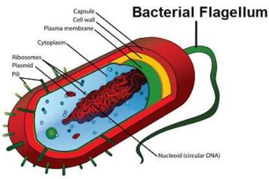
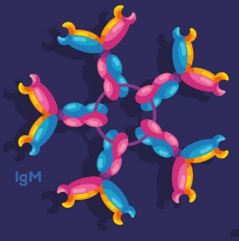
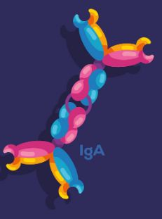
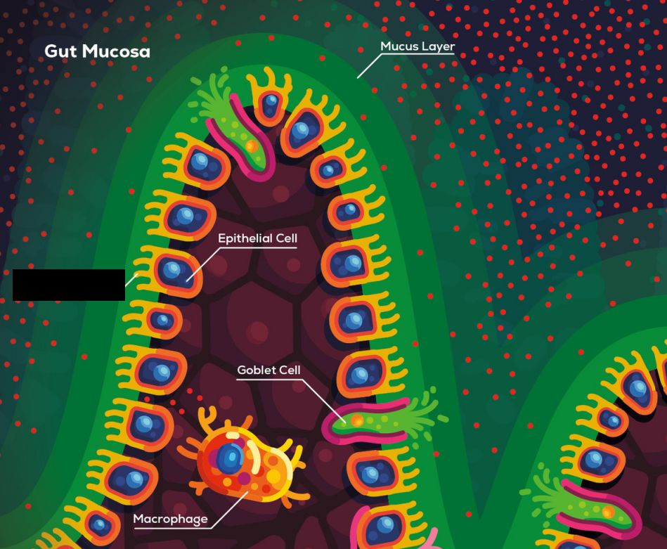
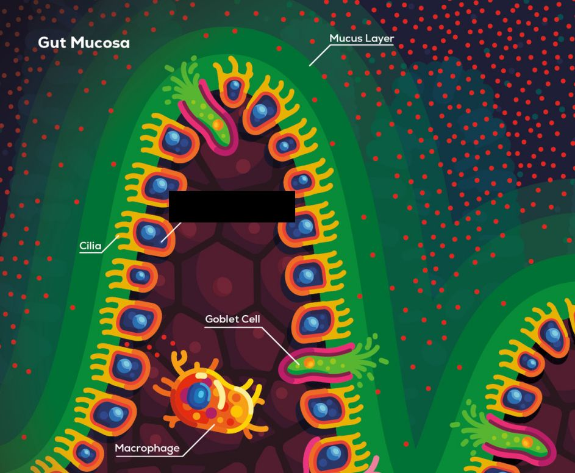
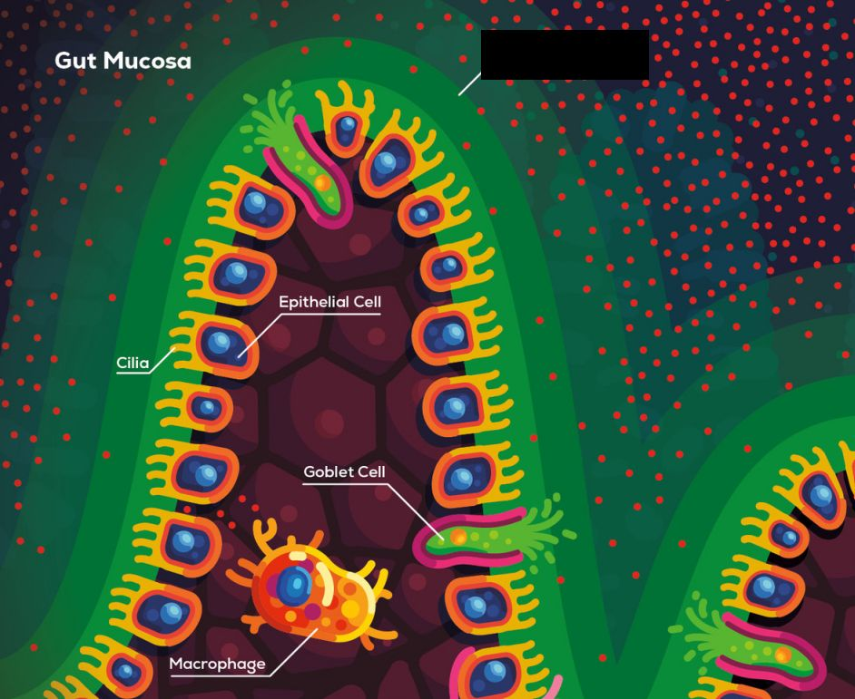
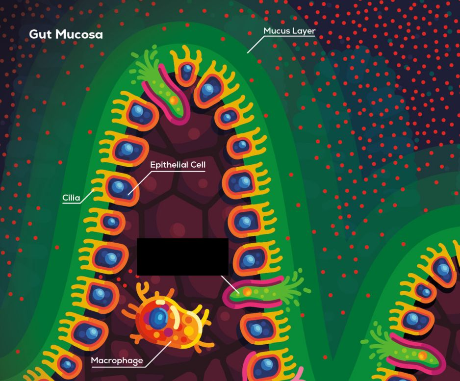
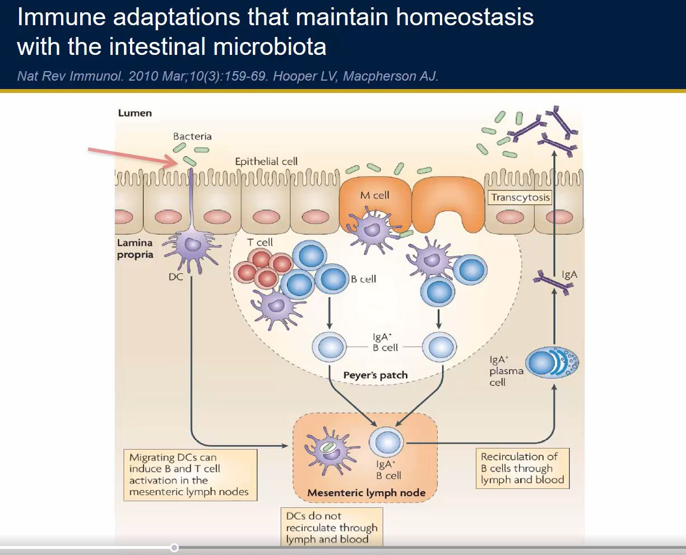
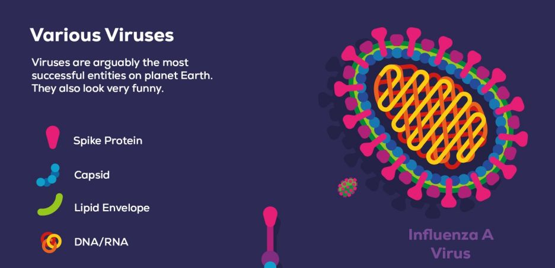
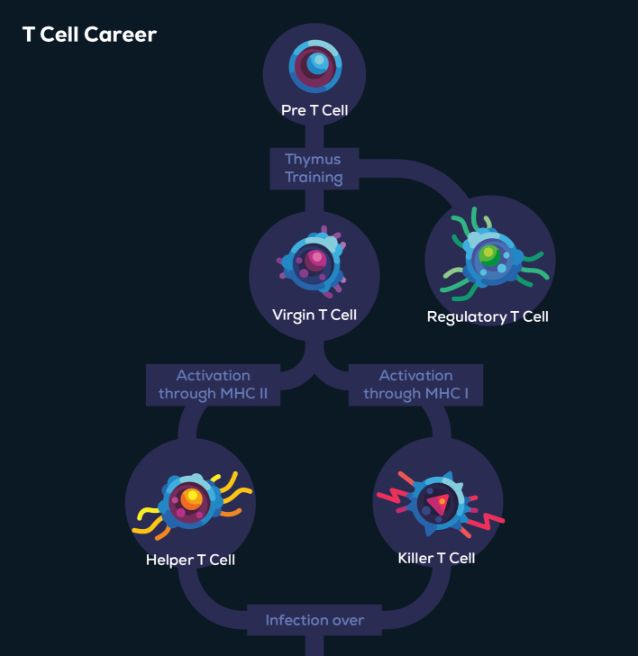

Skip to section: Chapter 1 · Chapter 2 · Chapter 3 · Chapter 4 · Chapter 5 · Chapter 6 · Chapter 7 · Chapter 8 · Chapter 9 · Chapter 10 · Chapter 11 · Chapter 12 · Chapter 13 · Chapter 14 · Chapter 15 · Chapter 16 · Chapter 17 · Chapter 18 · Chapter 19 · Chapter 20 · Chapter 21 · Chapter 22 · Chapter 23 · Chapter 24 · Chapter 25 · Chapter 26 · Chapter 27 · Chapter 28 · Chapter 29 · Chapter 30 · Chapter 31 · Chapter 32 · Chapter 33 · Chapter 34 · Chapter 35 · Chapter 36 · Chapter 37 · Chapter 38 · Chapter 39 · Chapter 40 · Chapter 41 · Chapter 42 · Chapter 43 · Chapter 44 · Chapter 45 · (empty section name)
Chapter 1 # ↩
There are no cards for this section.
Chapter 2 # ↩
There are no cards for this section.
Chapter 3 # ↩
There are no cards for this section.
Chapter 4 # ↩
names for the two broad types of immune systems
innate and adaptive
source: Philipp Dettmer. Immune: a journey into the mysterious system that keeps you alive. 2021. Chapter 4.
the type of immune system that is like a large library
adaptive immune system
source: Philipp Dettmer. Immune: a journey into the mysterious system that keeps you alive. 2021. Chapter 4.
the type of immune system that is ready as soon as you are born
innate immune system
source: Philipp Dettmer. Immune: a journey into the mysterious system that keeps you alive. 2021. Chapter 4.
the type of immune system that is highly specific to which invaders are invading
adaptive immune system
source: Philipp Dettmer. Immune: a journey into the mysterious system that keeps you alive. 2021. Chapter 4.
the type of immune system that is the first line of defense
innate immune system
source: Philipp Dettmer. Immune: a journey into the mysterious system that keeps you alive. 2021. Chapter 4.
the innate immune system is non-specific, but it can still do what?
distinguish self from other
source: Philipp Dettmer. Immune: a journey into the mysterious system that keeps you alive. 2021. Chapter 4.
Chapter 5 # ↩
There are no cards for this section.
Chapter 6 # ↩
What are lamellar bodies?
tiny sacs in skin cells that squirt out fat that helps to coat/waterproof the skin cells
source: Philipp Dettmer. Immune: a journey into the mysterious system that keeps you alive. 2021. Chapter 6.
What are the skin cells closest to your body (furthest from the outside world) called?
basal cells
source: Philipp Dettmer. Immune: a journey into the mysterious system that keeps you alive. 2021. Chapter 6.
Are the top-most skin cells dead or alive?
dead
source: Philipp Dettmer. Immune: a journey into the mysterious system that keeps you alive. 2021. Chapter 6.
Are the top-most skin cells alive or dead?
dead
source: Philipp Dettmer. Immune: a journey into the mysterious system that keeps you alive. 2021. Chapter 6.
Is the skin acidic or basic?
acidic
source: Philipp Dettmer. Immune: a journey into the mysterious system that keeps you alive. 2021. Chapter 6.
Is the skin basic or acidic?
acidic
source: Philipp Dettmer. Immune: a journey into the mysterious system that keeps you alive. 2021. Chapter 6.
Why are viral infections of the skin relatively rare, compared to bacterial and fungal skin infections?
Viruses require a living host to infect (and the top-most skin cells are dead)
source: Philipp Dettmer. Immune: a journey into the mysterious system that keeps you alive. 2021. Chapter 6.
Chapter 7 # ↩
which immune cell is like an intelligence officer at the battle scene collecting samples of the dead enemies?
dendritic cell
source: Philipp Dettmer. Immune: a journey into the mysterious system that keeps you alive. 2021. Chapter 7.
which immune cell is like a raging rhino that arrives first at the scene and stamps on the bad bunnies (aka bacteria)?
macrophage
source: Philipp Dettmer. Immune: a journey into the mysterious system that keeps you alive. 2021. Chapter 7.
Chapter 8 # ↩
technical term for controlled cell suicide
apoptosis
source: Philipp Dettmer. Immune: a journey into the mysterious system that keeps you alive. 2021. Chapter 8.
type of cell that is like a garbage truck
macrophage
source: Philipp Dettmer. Immune: a journey into the mysterious system that keeps you alive. 2021. Chapter 8.
which type of cell is the "crazy suicidal Spartan warrior of the immune system"?
neutrophil
source: Philipp Dettmer. Immune: a journey into the mysterious system that keeps you alive. 2021. Chapter 8.
About how many bacteria can a macrophage phagocytose in its lifetime?
up to 100
source: Philipp Dettmer. Immune: a journey into the mysterious system that keeps you alive. 2021. Chapter 8.
What material does a neutrophil use to "cast a net" around itself as a defense against pathogens?
Its own DNA
source: Philipp Dettmer. Immune: a journey into the mysterious system that keeps you alive. 2021. Chapter 8.
Chapter 9 # ↩
Name at least two of the five characteristics of inflammation
Redness, heat, swelling, pain, loss of function
source: Philipp Dettmer. Immune: a journey into the mysterious system that keeps you alive. 2021. Chapter 9.
Why can free-floating mitochondria trigger inflammatory reactions in the body?
The immune system still remembers mitochondria as bacteria (because once upon a time mitochondria were probably ancient bacteria that merged with ancestors of our cells)
source: Philipp Dettmer. Immune: a journey into the mysterious system that keeps you alive. 2021. Chapter 9.
Chapter 10 # ↩
How are cytokines introduced in the Immune book?
they are small proteins that convey information, or
as the way immune cells communicate
source: Philipp Dettmer. Immune: a journey into the mysterious system that keeps you alive. 2021. Chapter 10.
If cells cannot see or hear, what sense do they use to communicate?
smelling
source: Philipp Dettmer. Immune: a journey into the mysterious system that keeps you alive. 2021. Chapter 10.
_ are the language of your immune cells
cytokines
source: Philipp Dettmer. Immune: a journey into the mysterious system that keeps you alive. 2021. Chapter 10.
cytokines are the _ of your immune cells
language
source: Philipp Dettmer. Immune: a journey into the mysterious system that keeps you alive. 2021. Chapter 10.
cytokines are p[...]
proteins
source: Philipp Dettmer. Immune: a journey into the mysterious system that keeps you alive. 2021. Chapter 10.
If cytokines are the smell particles, what are the noses called?
receptors (on your cell surfaces)
source: Philipp Dettmer. Immune: a journey into the mysterious system that keeps you alive. 2021. Chapter 10.
What do cells "smell" to know where to go?
cytokines
source: Philipp Dettmer. Immune: a journey into the mysterious system that keeps you alive. 2021. Chapter 10.
Chapter 11 # ↩
Toll-Like Receptors are present in which of the two immune systems?
Both!
What's an example of something that Toll-Like Receptors can detect in bacteria?
flagella (the tentacle-propeller things that bacteria have)

source: Philipp Dettmer. Immune: a journey into the mysterious system that keeps you alive. 2021. Chapter 11.
How does the innate immune system recognize bacteria?
the receptors on innate immune system cells can recognize "hallmark" proteins/structures on bacteria that all/most bacteria have (e.g. flagella and certain waste products bacteria emit)
source: Philipp Dettmer. Immune: a journey into the mysterious system that keeps you alive. 2021. Chapter 11.
What's an example of a structure not present on any human cells, but present on bacteria, that is used by the immune system to identify an "other" cell?
flagellum
source: Philipp Dettmer. Immune: a journey into the mysterious system that keeps you alive. 2021. Chapter 11.
What is one of the types of receptors that the innate immune system uses to identify "other" cells?
Toll-like receptor
source: Philipp Dettmer. Immune: a journey into the mysterious system that keeps you alive. 2021. Chapter 11.
Chapter 12 # ↩
How is C3a different from cytokines?
C3a is passively generated by a splitting C3 complement protein, while cytokines are generated by cells
source: Philipp Dettmer. Immune: a journey into the mysterious system that keeps you alive. 2021. Chapter 12.
How is C3a similar to cytokines?
they both function as alarm bells that call immune cells like macrophages to the site of a pathogen
source: Philipp Dettmer. Immune: a journey into the mysterious system that keeps you alive. 2021. Chapter 12.
What happens during opsonization?
a bacterium gets covered in complement proteins or antibodies
source: Philipp Dettmer. Immune: a journey into the mysterious system that keeps you alive. 2021. Chapter 12.
What Japanese word should I think of when I see the Greek word "opson"?
okazu
source: Philipp Dettmer. Immune: a journey into the mysterious system that keeps you alive. 2021. Chapter 12.
Which part of the C3 complement protein anchors onto invading bacteria?
C3b
source: Philipp Dettmer. Immune: a journey into the mysterious system that keeps you alive. 2021. Chapter 12.
Which part of the C3 complement protein signals to macrophages and neutrophils to come to the site of infection?
C3a
source: Philipp Dettmer. Immune: a journey into the mysterious system that keeps you alive. 2021. Chapter 12.
What is the charge of the membranes of cells and bacteria?
negative
source: Philipp Dettmer. Immune: a journey into the mysterious system that keeps you alive. 2021. Chapter 12.
What is the charge of complement proteins?
positive
source: Philipp Dettmer. Immune: a journey into the mysterious system that keeps you alive. 2021. Chapter 12.
What signal do macrophages use to signal to neutrophils to come to the site of infection? (generic term)
cytokines
source: Philipp Dettmer. Immune: a journey into the mysterious system that keeps you alive. 2021. Chapter 12.
What does the process opsonization refer to?
Complement proteins (or sometimes other things as well, like antibodies) attaching to an invading bacteria or virus and making it easier for macrophages and neutrophils to grab on to
source: Philipp Dettmer. Immune: a journey into the mysterious system that keeps you alive. 2021. Chapter 12.
What does the membrane attack complex refer to?
A large structure built of complement proteins used to pierce invader cells
source: Philipp Dettmer. Immune: a journey into the mysterious system that keeps you alive. 2021. Chapter 12.
Chapter 13 # ↩
Which cell's job is it to activate the adaptive immune system?
Dendritic cell
source: Philipp Dettmer. Immune: a journey into the mysterious system that keeps you alive. 2021. Chapter 13.
Which cell is like a wine connoisseur?
Dendritic cell
source: Philipp Dettmer. Immune: a journey into the mysterious system that keeps you alive. 2021. Chapter 13.
The dendritic cell is like a _ connoisseur
wine
source: Philipp Dettmer. Immune: a journey into the mysterious system that keeps you alive. 2021. Chapter 13.
When not activated, the dendritic cell keeps [...]ing and spitting
swallowing/sipping
source: Philipp Dettmer. Immune: a journey into the mysterious system that keeps you alive. 2021. Chapter 13.
When not activated, the dendritic cell keeps swallowing and [...]ing
spitting
source: Philipp Dettmer. Immune: a journey into the mysterious system that keeps you alive. 2021. Chapter 13.
How are macrophages and dendritic cells different?
A macrophage just wants to eat up the pathogen and digest it, whereas the dendritic cell is trying to collect samples and identify the type of pathogen
note: apparently macrophages can also do antigen presentation, but here we're just talking about the typical case.
source: Philipp Dettmer. Immune: a journey into the mysterious system that keeps you alive. 2021. Chapter 13.
How are macrophages and dendritic cells similar?
they both perform phagocytosis (grabbing and swallowing things)
source: Philipp Dettmer. Immune: a journey into the mysterious system that keeps you alive. 2021. Chapter 13.
Why doesn't the dendritic cell continue to sample while it is in transit to the "intelligence center"?
(1) It would dilute the samples collected on the battlefield; and (2) you wouldn't want to present harmless cells to the adaptive immune system, as that would cause an autoimmune disease
source: Philipp Dettmer. Immune: a journey into the mysterious system that keeps you alive. 2021. Chapter 13.
After the dendritic cell collects enough samples from the battlefield, where does it go to?
a lymph node
source: Philipp Dettmer. Immune: a journey into the mysterious system that keeps you alive. 2021. Chapter 13.
What are considered the "careful sampling connoisseurs" of the immune system?
Dendritic cells
source: Philipp Dettmer. Immune: a journey into the mysterious system that keeps you alive. 2021. Chapter 13.
Chapter 14 # ↩
Which moves faster, blood vessels or lymphatic vessels?
blood vessels
source: Philipp Dettmer. Immune: a journey into the mysterious system that keeps you alive. 2021. Chapter 14.
Which moves slower, blood vessels or lymphatic vessels?
lymphatic vessels
source: Philipp Dettmer. Immune: a journey into the mysterious system that keeps you alive. 2021. Chapter 14.
Name for the fluid transported through the lymphatic system
lymph
source: Philipp Dettmer. Immune: a journey into the mysterious system that keeps you alive. 2021. Chapter 14.
color of lymph
mostly clear, but yellowish-white at some places of the body
source: Philipp Dettmer. Immune: a journey into the mysterious system that keeps you alive. 2021. Chapter 14.
What is the real name for what the Immune book calls "immune system intelligence centers"?
lymph nodes
source: Philipp Dettmer. Immune: a journey into the mysterious system that keeps you alive. 2021. Chapter 14.
Which system transports fat around the body?
the lymphatic system
source: Philipp Dettmer. Immune: a journey into the mysterious system that keeps you alive. 2021. Chapter 14.
name the lymphoid organ: to[...]
tonsils
source: Philipp Dettmer. Immune: a journey into the mysterious system that keeps you alive. 2021. Chapter 14.
name the lymphoid organ: th[...]
thymus
source: Philipp Dettmer. Immune: a journey into the mysterious system that keeps you alive. 2021. Chapter 14.
name the lymphoid organ: s[...]
spleen
source: Philipp Dettmer. Immune: a journey into the mysterious system that keeps you alive. 2021. Chapter 14.
Roughly how many lymph nodes do you have?
600
source: Philipp Dettmer. Immune: a journey into the mysterious system that keeps you alive. 2021. Chapter 14.
Three analogies the Immune book uses for lymph nodes
intelligence center, megacities, dating platforms
source: Philipp Dettmer. Immune: a journey into the mysterious system that keeps you alive. 2021. Chapter 14.
What can monocytes turn into?
macrophages and dendritic cells
source: Philipp Dettmer. Immune: a journey into the mysterious system that keeps you alive. 2021. Chapter 14.
What's the main home for monocytes?
the spleen
source: Philipp Dettmer. Immune: a journey into the mysterious system that keeps you alive. 2021. Chapter 14.
Which organ is like a huge lymph node that filters your blood?
the spleen
source: Philipp Dettmer. Immune: a journey into the mysterious system that keeps you alive. 2021. Chapter 14.
lymph fluid : lymph nodes :: blood : ???
spleen
source: Philipp Dettmer. Immune: a journey into the mysterious system that keeps you alive. 2021. Chapter 14.
What happens if you lose your spleen?
other organs take over its job; (some people have a tiny extra spleen that grows and takes over)
source: Philipp Dettmer. Immune: a journey into the mysterious system that keeps you alive. 2021. Chapter 14.
Which immune system organ is involved in recognizing what kinds of food you eat?
tonsils
source: Philipp Dettmer. Immune: a journey into the mysterious system that keeps you alive. 2021. Chapter 14.
Why is it not a big deal to remove tonsils in most cases?
(mostly guessing here) Most of the learning by the immune system/tonsils is done when you are young, so as long as you are old enough (7+ years old?) your body has already learned a lot about which foods are safe/what pathogens look like [which is the job of the tonsils]
source: Philipp Dettmer. Immune: a journey into the mysterious system that keeps you alive. 2021. Chapter 14.
How broadly in the body does the lymphatic system circulate?
The whole body
source: Philipp Dettmer. Immune: a journey into the mysterious system that keeps you alive. 2021. Chapter 14.
Does the blood circulatory system use an active pump?
Yes (it's the heart!)
source: Philipp Dettmer. Immune: a journey into the mysterious system that keeps you alive. 2021. Chapter 14.
Does the lymph circulatory system use an active pump?
No
source: Philipp Dettmer. Immune: a journey into the mysterious system that keeps you alive. 2021. Chapter 14.
Can water enter lymph vessels from tissues?
Yes
source: Philipp Dettmer. Immune: a journey into the mysterious system that keeps you alive. 2021. Chapter 14.
Can water enter tissues from lymph vessels?
No
source: Philipp Dettmer. Immune: a journey into the mysterious system that keeps you alive. 2021. Chapter 14.
Do your lymph nodes enlarge or shrink when there is an active infection?
enlarge
source: Philipp Dettmer. Immune: a journey into the mysterious system that keeps you alive. 2021. Chapter 14.
What kind of immune cells are stored in the "barracks" of the spleen?
Monocytes
source: Philipp Dettmer. Immune: a journey into the mysterious system that keeps you alive. 2021. Chapter 14.
Which two places do the majority of monocytes reside in the body?
The blood circulation and the spleen
source: Philipp Dettmer. Immune: a journey into the mysterious system that keeps you alive. 2021. Chapter 14.
What is a similarity between the tonsils and the spleen in terms of their indispensability towards survival?
That they are generally good to have structures in the body but are non-essential to immediate survival
source: Philipp Dettmer. Immune: a journey into the mysterious system that keeps you alive. 2021. Chapter 14.
What other type of substance does the lymphatic system circulate other than immune cells?
Fat (from the intestine and into bloodstream)
source: Philipp Dettmer. Immune: a journey into the mysterious system that keeps you alive. 2021. Chapter 14.
Chapter 15 # ↩
antibodies are made from p[...]
proteins
source: Philipp Dettmer. Immune: a journey into the mysterious system that keeps you alive. 2021. Chapter 15.
What can opsonize bacteria, other than complement?
antibodies
source: Philipp Dettmer. Immune: a journey into the mysterious system that keeps you alive. 2021. Chapter 15.
Antibodies are part of which immune system?
adaptive
source: Philipp Dettmer. Immune: a journey into the mysterious system that keeps you alive. 2021. Chapter 15.
Complement proteins are part of which immune system?
innate
source: Philipp Dettmer. Immune: a journey into the mysterious system that keeps you alive. 2021. Chapter 15.
What do Helper T Cells do to macrophages?
tell macrophages to keep fighting
source: Philipp Dettmer. Immune: a journey into the mysterious system that keeps you alive. 2021. Chapter 15.
Helper T Cells are part of which immune system?
adaptive
source: Philipp Dettmer. Immune: a journey into the mysterious system that keeps you alive. 2021. Chapter 15.
name of the type of cell that jolts tired macrophages back to life
Helper T Cell
source: Philipp Dettmer. Immune: a journey into the mysterious system that keeps you alive. 2021. Chapter 15.
Do helper T cells show up at the beginning or end of a "battle" induced by a pathogen?
End
source: Philipp Dettmer. Immune: a journey into the mysterious system that keeps you alive. 2021. Chapter 15.
Do macrophages show up at the beginning or end of a "battle" induced by a pathogen?
Beginning
source: Philipp Dettmer. Immune: a journey into the mysterious system that keeps you alive. 2021. Chapter 15.
Do neutrophils show up at the beginning or end of a "battle" induced by a pathogen?
Beginning
source: Philipp Dettmer. Immune: a journey into the mysterious system that keeps you alive. 2021. Chapter 15.
Do antibodies show up at the beginning or end of a "battle" induced by a pathogen?
End
source: Philipp Dettmer. Immune: a journey into the mysterious system that keeps you alive. 2021. Chapter 15.
Are antibodies specific to the identity of the pathogen?
Yes
source: Philipp Dettmer. Immune: a journey into the mysterious system that keeps you alive. 2021. Chapter 15.
Are complement proteins specific to the identity of the pathogen?
No
source: Philipp Dettmer. Immune: a journey into the mysterious system that keeps you alive. 2021. Chapter 15.
Are antibodies made by the adaptive or innate immune system?
Adaptive
source: Philipp Dettmer. Immune: a journey into the mysterious system that keeps you alive. 2021. Chapter 15.
Are cytokines made by the adaptive or innate immune system?
Both systems create cytokines
source: Philipp Dettmer. Immune: a journey into the mysterious system that keeps you alive. 2021. Chapter 15.
Which immune cells clean up dead neutrophils?
Macrophages
source: Philipp Dettmer. Immune: a journey into the mysterious system that keeps you alive. 2021. Chapter 15.
Chapter 16 # ↩
What does the speed with which bacteria multiply mean about its ability to adapt?
it adapts faster/evolves faster (compared to humans/larger organisms)
source: Philipp Dettmer. Immune: a journey into the mysterious system that keeps you alive. 2021. Chapter 16.
How does the Immune book explain why the adaptive immune system is necessary?
bacteria evolve much faster than humans do, so some separate way to deal with the rapidly-changing array of new pathogens is needed
source: Philipp Dettmer. Immune: a journey into the mysterious system that keeps you alive. 2021. Chapter 16.
Chapter 17 # ↩
Are Toll-Like Receptors present in the innate immune system?
Yes
source: Philipp Dettmer. Immune: a journey into the mysterious system that keeps you alive. 2021. Chapter 17.
Are Toll-Like Receptors present in the adaptive immune system?
Yes
name for a protein piece that is recognized by the immune system
antigen
source: Philipp Dettmer. Immune: a journey into the mysterious system that keeps you alive. 2021. Chapter 17.
antibodies vs antigens: which ones attack invading bacteria?
antibodies
source: Philipp Dettmer. Immune: a journey into the mysterious system that keeps you alive. 2021. Chapter 17.
antibodies vs antigens: which ones are made from protein?
both
source: Philipp Dettmer. Immune: a journey into the mysterious system that keeps you alive. 2021. Chapter 17.
antibodies vs antigens: which ones can belong to bacteria?
antigens
source: Philipp Dettmer. Immune: a journey into the mysterious system that keeps you alive. 2021. Chapter 17.
An antibody belongs to whom?
your body('s immune system)
source: Philipp Dettmer. Immune: a journey into the mysterious system that keeps you alive. 2021. Chapter 17.
An antigen belongs to whom?
the pathogen (but can also exist on normal cells and cancer cells)
source: Philipp Dettmer. Immune: a journey into the mysterious system that keeps you alive. 2021. Chapter 17.
Chapter 18 # ↩
What are the three criteria T cells need to pass to graduate and ultimately survive the "university" of the thymus gland?
1) functional T cell receptors
2) positive selection
3) negative selection
source: Philipp Dettmer. Immune: a journey into the mysterious system that keeps you alive. 2021. Chapter 18.
How many stages do T cells need to pass to graduate and ultimately survive the "university" of the thymus?
3
source: Philipp Dettmer. Immune: a journey into the mysterious system that keeps you alive. 2021. Chapter 18.
What is positive selection in the context of T cells?
a test to make sure T cells can recognize the other immune cells they will be working with / to make sure they can recognize and bind to MHC
note: I think the book is vastly oversimplifying here to make it comprehensible to people with little background (since at this point in the book, MHC has not been introduced yet). But looking at Wikipedia, it seems that what positive selection actually does is to make sure the T cell can bind to MHC (the hot dog bun), so that it can even have a shot at binding to antigens. If a helper T cell can't even bind to the hot dog bun, then there's no shot it can eat wieners of any kind, so would be quite a useless T cell.
source: Philipp Dettmer. Immune: a journey into the mysterious system that keeps you alive. 2021. Chapter 18.
https://en.wikipedia.org/wiki/Thymocyte#Positive_selection_and_lineage_commitment
What is negative selection in the context of T cells?
a test to make sure T cells are unable to recognize the body's own proteins
source: Philipp Dettmer. Immune: a journey into the mysterious system that keeps you alive. 2021. Chapter 18.
Where do T Cells get their name from?
the Thymus
source: Philipp Dettmer. Immune: a journey into the mysterious system that keeps you alive. 2021. Chapter 18.
Where are T Cells educated/trained?
the Thymus
source: Philipp Dettmer. Immune: a journey into the mysterious system that keeps you alive. 2021. Chapter 18.
T Cells are part of which immune system?
adaptive
source: Philipp Dettmer. Immune: a journey into the mysterious system that keeps you alive. 2021. Chapter 18.
Which organ does the Immune book call the Murder University?
the Thymus
source: Philipp Dettmer. Immune: a journey into the mysterious system that keeps you alive. 2021. Chapter 18.
How many different kinds of antigens can a newly created T cell recognize?
one
note: It's revealed later in the book that each T cell is actually very good at recognizing one antigen, but is okay at recognizing several others.
source: Philipp Dettmer. Immune: a journey into the mysterious system that keeps you alive. 2021. Chapter 18.
name for the class of diseases where the adaptive immune system attacks your own body's cells thinking they are other
autoimmune diseases
source: Philipp Dettmer. Immune: a journey into the mysterious system that keeps you alive. 2021. Chapter 18.
Name for the "test" that T cells go through to see if they can recognize the other T cells they will be working with
positive selection
note: apparently the book's definition of positive selection is not what is described in other sources (something to do with MHC, which is only covered in the next chapter)
source: Philipp Dettmer. Immune: a journey into the mysterious system that keeps you alive. 2021. Chapter 18.
Name for the "test" that T Cells go through to see if they can recognize the main proteins inside your body
negative selection
source: Philipp Dettmer. Immune: a journey into the mysterious system that keeps you alive. 2021. Chapter 18.
Name of the type of T Cell that has the purpose of calming the immune system down and prevent autoimmunity
Regulatory T Cell
source: Philipp Dettmer. Immune: a journey into the mysterious system that keeps you alive. 2021. Chapter 18.
How are the tonsils and the thymus similar? (aging)
both become less relevant/active as you age
The tonsils do their crucial work when you are a child, so much so that they can be removed sometimes without complication; the thymus keeps shrinking and withering away as you age (although perhaps it is still crucial/important even in old age)
source: Philipp Dettmer. Immune: a journey into the mysterious system that keeps you alive. 2021. Chapter 18.
What happens to the thymus as you age?
it shrinks
source: Philipp Dettmer. Immune: a journey into the mysterious system that keeps you alive. 2021. Chapter 18.
What happens to the T cells that recognize self?
they are killed
source: Philipp Dettmer. Immune: a journey into the mysterious system that keeps you alive. 2021. Chapter 18.
Chapter 19 # ↩
The dendritic cell is an [...]-presenting cell
antigen
source: Philipp Dettmer. Immune: a journey into the mysterious system that keeps you alive. 2021. Chapter 19.
The dendritic cell is an antigen-[...] cell
presenting
source: Philipp Dettmer. Immune: a journey into the mysterious system that keeps you alive. 2021. Chapter 19.
Example of an immune cell that disassembles enemies and covers itself in the enemies' guts
Dendritic cell (also B cells!)
source: Philipp Dettmer. Immune: a journey into the mysterious system that keeps you alive. 2021. Chapter 19.
Food analogy for MHC class II
hot dog bun
source: Philipp Dettmer. Immune: a journey into the mysterious system that keeps you alive. 2021. Chapter 19.
The real name for the "hot dog bun" molecule
MHC class II
source: Philipp Dettmer. Immune: a journey into the mysterious system that keeps you alive. 2021. Chapter 19.
The real name for the "hot dog wiener" molecule
antigen
source: Philipp Dettmer. Immune: a journey into the mysterious system that keeps you alive. 2021. Chapter 19.
Food analogy for antigen (during presentation)
a (tasty) wiener
source: Philipp Dettmer. Immune: a journey into the mysterious system that keeps you alive. 2021. Chapter 19.
Helper T cells eat a wiener only if what?
the wiener is in a hot dog bun
source: Philipp Dettmer. Immune: a journey into the mysterious system that keeps you alive. 2021. Chapter 19.
Why is it a good thing that Helper T cells only recognize antigens when they are presented in an MHC class II molecule?
it ensures that the helper T cells don't get activated by accident
source: Philipp Dettmer. Immune: a journey into the mysterious system that keeps you alive. 2021. Chapter 19.
What does MHC class II stand for?
Major Histocompatibility Complex class II
source: Philipp Dettmer. Immune: a journey into the mysterious system that keeps you alive. 2021. Chapter 19.
Who does a dendritic cell hope to meet and fall in love with?
a helper T cell
source: Philipp Dettmer. Immune: a journey into the mysterious system that keeps you alive. 2021. Chapter 19.
After a dendritic cell finds a matching helper T cell, what else needs to happen before the helper T cell gets activated?
a gentle kiss from the dendritic cell to the helper T cell
source: Philipp Dettmer. Immune: a journey into the mysterious system that keeps you alive. 2021. Chapter 19.
A dendritic cell searches for a matching helper T cell for about a week before it gives up and kills itself. Why is this useful?
it ensures the adaptive immune system isn't acting on old information
source: Philipp Dettmer. Immune: a journey into the mysterious system that keeps you alive. 2021. Chapter 19.
Why is it a good thing that the genes for MHC molecules are so diverse among humans?
different MHC molecules are good at presenting different antigens, so by having diversity it ensures some human out there can deal with any given pathogen, which means humans as a species are very resistant to being wiped out
source: Philipp Dettmer. Immune: a journey into the mysterious system that keeps you alive. 2021. Chapter 19.
crucial principle of the immune system: The immune system needs [...] stimulation to stay active
constant
source: Philipp Dettmer. Immune: a journey into the mysterious system that keeps you alive. 2021. Chapter 19.
Which immune cell samples proteins from an enemy and finds a helper T cell who may have receptors that can bind to the enemy proteins?
Dendritic cell
source: Philipp Dettmer. Immune: a journey into the mysterious system that keeps you alive. 2021. Chapter 19.
What's an example of an immune cell that ingests and rips apart an enemy and turns it into antigens to be presented on an MHC class II molecule?
Dendritic cell, B cell
Note: phrasing it as "what's an example of" because there may be other kinds of antigen-presenting immune cells that we haven't encountered yet so far. In particular, aparently macrophages can antigen-present but the book never talked about that.
source: Philipp Dettmer. Immune: a journey into the mysterious system that keeps you alive. 2021. Chapter 19.
Which immune system are helper T cells part of?
Adaptive immune system
source: Philipp Dettmer. Immune: a journey into the mysterious system that keeps you alive. 2021. Chapter 19.
Are helper T cells able to recognize an antigen if it is presented on an MHC class II molecule?
Yes (as long as the helper T cell has a matching receptor to this particular antigen)
source: Philipp Dettmer. Immune: a journey into the mysterious system that keeps you alive. 2021. Chapter 19.
Are helper T cells able to recognize an antigen that is freely floating around?
No (the antigen must be presented on an MHC class II molecule)
source: Philipp Dettmer. Immune: a journey into the mysterious system that keeps you alive. 2021. Chapter 19.
Where does the dendritic cell travel to in order to find a helper T cell?
(A nearby) lymph node
source: Philipp Dettmer. Immune: a journey into the mysterious system that keeps you alive. 2021. Chapter 19.
Why are there so many steps to confirm if the adaptive immune system should be activated?
Because activating it can be very resource intensive and possibly kill the organism if too frequently and unnecessarily activated
source: Philipp Dettmer. Immune: a journey into the mysterious system that keeps you alive. 2021. Chapter 19.
How long does a dendritic cell have to find a helper T cell that matches?
About a week
source: Philipp Dettmer. Immune: a journey into the mysterious system that keeps you alive. 2021. Chapter 19.
What happens when a dendritic cell's "counter" of a week runs out?
it kills itself
The dendritic cell kills itself and "wipes clean" the antigen it has so as to not leave outdated information in the immune system
source: Philipp Dettmer. Immune: a journey into the mysterious system that keeps you alive. 2021. Chapter 19.
Do humans tend to prefer mates with a different set of MHC class II molecules than them?
Yes
source: Philipp Dettmer. Immune: a journey into the mysterious system that keeps you alive. 2021. Chapter 19.
Do humans tend to prefer mates with the same set of MHC class II molecules than them?
No
source: Philipp Dettmer. Immune: a journey into the mysterious system that keeps you alive. 2021. Chapter 19.
crucial principle of the immune system: The immune system needs constant stimulation to [...]
stay active
source: Philipp Dettmer. Immune: a journey into the mysterious system that keeps you alive. 2021. Chapter 19.
crucial principle of the immune system: The immune system needs constant [...] to stay active
stimulation
source: Philipp Dettmer. Immune: a journey into the mysterious system that keeps you alive. 2021. Chapter 19.
Chapter 20 # ↩
Nickname for the thymus
Murder University
source: Philipp Dettmer. Immune: a journey into the mysterious system that keeps you alive. 2021. Chapter 20.
Do helper T cells do any active fighting themselves?
No
source: Philipp Dettmer. Immune: a journey into the mysterious system that keeps you alive. 2021. Chapter 20.
What happens to the helper T cells that don't suicide after a battle?
They become memory helper T cells
source: Philipp Dettmer. Immune: a journey into the mysterious system that keeps you alive. 2021. Chapter 20.
Where do all T cells originate?
Bone marrow
source: Philipp Dettmer. Immune: a journey into the mysterious system that keeps you alive. 2021. Chapter 20.
What is the term for T cells which are freshly graduated from "Thymus University"?
virgin/naive T cells
note: "naive T cell" and "virgin T cell" mean the same thing.
source: Philipp Dettmer. Immune: a journey into the mysterious system that keeps you alive. 2021. Chapter 20.
Which T cell subtypes expand in population through recognizing the MHC class II molecule on dendritic cells?
Helper T cells
I think killer T cells may also do this (with MHC I instead of II), but the book kind of skipped over the details in that later chapter.
source: Philipp Dettmer. Immune: a journey into the mysterious system that keeps you alive. 2021. Chapter 20.
Are killer T cells part of the innate or adaptive immune system?
adaptive
source: Philipp Dettmer. Immune: a journey into the mysterious system that keeps you alive. 2021. Chapter 20.
Do dendritic cells antigen present to helper T cells?
Yes
source: Philipp Dettmer. Immune: a journey into the mysterious system that keeps you alive. 2021. Chapter 20.
What occurs after a helper T cell has been "activated" by a dendritic cell?
(The helper T cell travels to a different part of the lymph node and) rapidly clones itself
source: Philipp Dettmer. Immune: a journey into the mysterious system that keeps you alive. 2021. Chapter 20.
What do helper T cells "sniff" to find their way to the "battlefield" (aka the site of infection)?
Cytokines
source: Philipp Dettmer. Immune: a journey into the mysterious system that keeps you alive. 2021. Chapter 20.
Which cell type do helper T cells "whisper" to, to boost their fighting capacity?
Macrophages
source: Philipp Dettmer. Immune: a journey into the mysterious system that keeps you alive. 2021. Chapter 20.
How long does it take for helper T cells to arrive at the site of infection? (starting from when the wound was inflicted)
5 to 7 days
source: Philipp Dettmer. Immune: a journey into the mysterious system that keeps you alive. 2021. Chapter 20.
What is the usefulness of memory helper T cells in a subsequent infection of the same pathogen?
They can help the body immediately mount an immune response to the pathogen rather than needing to go circuitously through the innate immune system and dendritic antigen presentation
source: Philipp Dettmer. Immune: a journey into the mysterious system that keeps you alive. 2021. Chapter 20.
How many groups do cloned Helper T cells divide into?
Two
One group goes to the battlefield to assist macrophages (and most of which kill themselves while a minority turn into memory helper T cells). The second group activates B cells.
source: Philipp Dettmer. Immune: a journey into the mysterious system that keeps you alive. 2021. Chapter 20.
Chapter 21 # ↩
Where do B cells get their education?
in the bone marrow
source: Philipp Dettmer. Immune: a journey into the mysterious system that keeps you alive. 2021. Chapter 21.
Where do B cells originate?
bone marrow
source: Philipp Dettmer. Immune: a journey into the mysterious system that keeps you alive. 2021. Chapter 21.
Which type of cells are the factories that produce antibodies?
B cells
source: Philipp Dettmer. Immune: a journey into the mysterious system that keeps you alive. 2021. Chapter 21.
What do B cells produce?
antibodies
source: Philipp Dettmer. Immune: a journey into the mysterious system that keeps you alive. 2021. Chapter 21.
Which immune system are B cells part of?
Adaptive immune system
source: Philipp Dettmer. Immune: a journey into the mysterious system that keeps you alive. 2021. Chapter 21.
Which immune system activates helper T cells?
innate immune system (specifically, dendritic cells)
source: Philipp Dettmer. Immune: a journey into the mysterious system that keeps you alive. 2021. Chapter 21.
What's the official name for the "the invisible army"?
complement proteins
source: Philipp Dettmer. Immune: a journey into the mysterious system that keeps you alive. 2021. Chapter 21.
When inflammation happens, fluid floods the battlefield, but this can't go on forever (otherwise your tissue would burst). Where does the excess fluid go?
it drains into your lymphatic system
source: Philipp Dettmer. Immune: a journey into the mysterious system that keeps you alive. 2021. Chapter 21.
Where do virgin B cells hang out?
(a specific part of) lymph nodes
source: Philipp Dettmer. Immune: a journey into the mysterious system that keeps you alive. 2021. Chapter 21.
Food analogy for the antigens that B cells can recognize
roasted turkey legs (not highly processed wieners)
source: Philipp Dettmer. Immune: a journey into the mysterious system that keeps you alive. 2021. Chapter 21.
Helper T cells are [picky/not picky] eaters
picky
source: Philipp Dettmer. Immune: a journey into the mysterious system that keeps you alive. 2021. Chapter 21.
B cells are [picky/not picky] eaters
not picky
source: Philipp Dettmer. Immune: a journey into the mysterious system that keeps you alive. 2021. Chapter 21.
How do complement proteins interact with B cells?
complement proteins covering dead bacteria confirm to the B cells that there is a real danger/make it a lot easier for B cells to be activated
source: Philipp Dettmer. Immune: a journey into the mysterious system that keeps you alive. 2021. Chapter 21.
Food analogy for complement proteins on an antigen (for a B cell)
a really nice sauce on the turkey leg, which makes it even tastier to your B cells
source: Philipp Dettmer. Immune: a journey into the mysterious system that keeps you alive. 2021. Chapter 21.
Which cell of the adaptive immune system activates the B cells?
Helper T cells
source: Philipp Dettmer. Immune: a journey into the mysterious system that keeps you alive. 2021. Chapter 21.
B cells are [...]-presenting cells
antigen
source: Philipp Dettmer. Immune: a journey into the mysterious system that keeps you alive. 2021. Chapter 21.
Explain this sentence: "technically, the B and T Cells don’t recognize the exact same antigen"
B cells recognize a coarser/"less processed" version of antigen (the turkey drumstick), which it processes down into smaller chunks, and these smaller chunks (the wieners) are what the helper T cells recognize
source: Philipp Dettmer. Immune: a journey into the mysterious system that keeps you alive. 2021. Chapter 21.
Which adaptive immune cell does antigen-presentation?
B cells
source: Philipp Dettmer. Immune: a journey into the mysterious system that keeps you alive. 2021. Chapter 21.
Which innate immune cell does antigen-presentation?
Dendritic cells
source: Philipp Dettmer. Immune: a journey into the mysterious system that keeps you alive. 2021. Chapter 21.
Which kind of MHC molecule do B cells use when antigen-presenting?
MHC class II (same as the ones that dendritic cells use)
source: Philipp Dettmer. Immune: a journey into the mysterious system that keeps you alive. 2021. Chapter 21.
Even though B cells require a two-factor activation, even just activation through the innate immune system is enough to do what?
It gets the B cells to produce antibodies that flow down to the battlefield (but these are apparently "second-rate" antibodies)
source: Philipp Dettmer. Immune: a journey into the mysterious system that keeps you alive. 2021. Chapter 21.
What do B cells turn into once they are doubly activated?
Plasma cells
source: Philipp Dettmer. Immune: a journey into the mysterious system that keeps you alive. 2021. Chapter 21.
What does the body do with excess fluid?
It drains it into the lymph
source: Philipp Dettmer. Immune: a journey into the mysterious system that keeps you alive. 2021. Chapter 21.
What is a limitation of the MHC class II molecule?
It can only carry short antigens
"The antigens that can activate T Cell receptors have to be pretty short because the MHC molecule can only carry short antigens."
source: Philipp Dettmer. Immune: a journey into the mysterious system that keeps you alive. 2021. Chapter 21.
Which substance bound to a dead pathogen traveling in the lymph, can make it about 100 times easier to activate a virgin B cell?
Complement proteins
source: Philipp Dettmer. Immune: a journey into the mysterious system that keeps you alive. 2021. Chapter 21.
What are the two paths Helper T cells take after being antigen presented to?
They either travel to the battlefield or they try to activate B cells
source: Philipp Dettmer. Immune: a journey into the mysterious system that keeps you alive. 2021. Chapter 21.
What is a similarity between the way virgin B cells and dendritic cells antigen-present to helper T cells? (list one)
Both cells present the antigen on an MHC class II molecule
source: Philipp Dettmer. Immune: a journey into the mysterious system that keeps you alive. 2021. Chapter 21.
What do plasma B cells do better than virgin B cells?
They secrete way more antibodies per second
source: Philipp Dettmer. Immune: a journey into the mysterious system that keeps you alive. 2021. Chapter 21.
Where do both Virgin B cells and Helper T cells originate in the body?
Bone marrow
source: Philipp Dettmer. Immune: a journey into the mysterious system that keeps you alive. 2021. Chapter 21.
For how many antigens is a Virgin B cell and Helper T cell's receptor specific to?
Just one
note: In reality things are a bit more complicated. The book later goes on to say that T and B cells can actually recognize several antigens, but that it's very good at recognizing one of them.
source: Philipp Dettmer. Immune: a journey into the mysterious system that keeps you alive. 2021. Chapter 21.
What happens to the population of both Helper T cells and Virgin B cells upon antigen presentation?
They clone themselves
source: Philipp Dettmer. Immune: a journey into the mysterious system that keeps you alive. 2021. Chapter 21.
Virgin B cells get educated in the [...] whereas helper T cells get educated in the [...]
Bone marrow, thymus
source: Philipp Dettmer. Immune: a journey into the mysterious system that keeps you alive. 2021. Chapter 21.
Which type of cells produce antibodies?
B cells
note: Plasma cells also produce antibodies, but I think they are considered a subtype of B cell.
source: Philipp Dettmer. Immune: a journey into the mysterious system that keeps you alive. 2021. Chapter 21.
Explain what this sentence means: "Antibodies are basically B Cell receptors."
Antibodies are stuck to the surface of B cells and work as their receptors, but once a B cell is activated tons of new antibodies are created and released so they can attack your enemies
However, as far as I know, the antibodies that are on the surface of B cells do not detach to start attacking antigens. They're the same as the antibodies that attack, but they're just stuck on the surface acting as receptors. But perhaps I'm wrong about that.
source: Philipp Dettmer. Immune: a journey into the mysterious system that keeps you alive. 2021. Chapter 21.
adaptive immune system: [...] cells pick up larger antigen fragments than [...] cells
(virgin) B, (helper) T
source: Philipp Dettmer. Immune: a journey into the mysterious system that keeps you alive. 2021. Chapter 21.
adaptive immune system: [...] cells pick up smaller antigen fragments than [...] cells
(helper) T, (virgin) B
source: Philipp Dettmer. Immune: a journey into the mysterious system that keeps you alive. 2021. Chapter 21.
What does the lymph carry? (list 3 things)
Some valid answers:
1) dead pathogens
2) dead immune cells
3) cytokines
4) excess fluid
5) fat
source: Philipp Dettmer. Immune: a journey into the mysterious system that keeps you alive. 2021. Chapter 21.
Without a second activation step, what happens to most virgin B cells?
They kill themselves
source: Philipp Dettmer. Immune: a journey into the mysterious system that keeps you alive. 2021. Chapter 21.
What is a difference between the way virgin B cells versus dendritic cells antigen present to helper T cells? (list one)
1. B cells can present many different antigens at once on their surface whereas dendritic cells don't
2. Dendritic cells travel all the way from the battlefield to a lymph node to do the presentation, whereas B cells just pick up antigens in the lymph node and then just do the presentation there(?)
3. Dendritic cells are the ones that kiss the helper T cell, whereas in the B cell case, it's the helper T cell that does the kissing
note: This is going off the book's descriptions of each antigen presentation. But it's possible that dendritic cells also present lots of antigens all over their body, at least some of the time.
source: Philipp Dettmer. Immune: a journey into the mysterious system that keeps you alive. 2021. Chapter 21.
Chapter 22 # ↩
Name for the process where a B cell changes in response to feedback from a helper T cell
somatic hypermutation (also known as affinity maturation)
source: Philipp Dettmer. Immune: a journey into the mysterious system that keeps you alive. 2021. Chapter 22.
What's another name for somatic hypermutation?
affinity naturation
source: Philipp Dettmer. Immune: a journey into the mysterious system that keeps you alive. 2021. Chapter 22.
What's another name for affinity maturation?
somatic hypermutation
source: Philipp Dettmer. Immune: a journey into the mysterious system that keeps you alive. 2021. Chapter 22.
Food analogy for somatic hypermutation
Going back into the kitchen during the dinner party to make the dish perfect (instead of merely good or great)
source: Philipp Dettmer. Immune: a journey into the mysterious system that keeps you alive. 2021. Chapter 22.
Which type of immune cell undergoes somatic hypermutation?
B cells
source: Philipp Dettmer. Immune: a journey into the mysterious system that keeps you alive. 2021. Chapter 22.
Cooking metaphor: who's the food critic?
Helper T cells
source: Philipp Dettmer. Immune: a journey into the mysterious system that keeps you alive. 2021. Chapter 22.
Cooking metaphor: who's the chef?
B cells
source: Philipp Dettmer. Immune: a journey into the mysterious system that keeps you alive. 2021. Chapter 22.
Remarkable thing about B cell somatic hypermutation
B cells undergo random mutation and natural selection, which are the two ingredients of evolution. In other words, even within a single human's lifespan, your B cells are undergoing a form of evolution!
source: Philipp Dettmer. Immune: a journey into the mysterious system that keeps you alive. 2021. Chapter 22.
Why are antibodies so effective at fighting pathogens? (don't just say "because they're part of the adaptive immune system" or "because there are billions of B cell receptor combinations")
They undergo a lot of mutation/selection so that they eventually get fine-tuned specifically for the pathogen at hand
source: Philipp Dettmer. Immune: a journey into the mysterious system that keeps you alive. 2021. Chapter 22.
What is Somatic Hypermutation? (high level summary)
the process where a B cell changes in response to feedback from a helper T cell
source: Philipp Dettmer. Immune: a journey into the mysterious system that keeps you alive. 2021. Chapter 22.
What do an increasing number of T cell "kisses" to a B cell's receptor do to the B cell's receptor's specificity for an antigen?
It increases the specificity by promoting changes to the B cell's genetics that encodes the receptor
source: Philipp Dettmer. Immune: a journey into the mysterious system that keeps you alive. 2021. Chapter 22.
What is the term for the immune process of a B cell becoming increasingly specific to an antigen, through receiving a signal from a helper T cell?
Somatic hypermutation (or affinity maturation)
source: Philipp Dettmer. Immune: a journey into the mysterious system that keeps you alive. 2021. Chapter 22.
During the process of somatic hypermutation, are mutations to a B cell's receptor guaranteed to make it more specific to an antigen?
Not necessarily – it's a random mutation
source: Philipp Dettmer. Immune: a journey into the mysterious system that keeps you alive. 2021. Chapter 22.
During the process of somatic hypermutation, are mutations to a B cell's receptor that make it more selective to an antigen more likely to ensure the B cell's progression to a plasma B cell?
Yes
source: Philipp Dettmer. Immune: a journey into the mysterious system that keeps you alive. 2021. Chapter 22.
What is misleading about the food critic analogy for helper T cells?
The helper T cells aren't actually rating the B cell's receptors
The helper T cells will happily encourage any B cell as long as the B cell presents an antigen that fits the helper T cell at all. The real selection step is actually happening when the B cell tries to grab antigens – the better it is at grabbing antigens, the more likely it will actually grab one and be able to present it to the helper T cell
source: Philipp Dettmer. Immune: a journey into the mysterious system that keeps you alive. 2021. Chapter 22.
Cooking metaphor: What's a better analogy for B cell receptors?
Tongs that the B cell chefs use to pick up the ingredients
note: this analogy is not from the book; I made it up.
source: Philipp Dettmer. Immune: a journey into the mysterious system that keeps you alive. 2021. Chapter 22.
Cooking metaphor: What's a better analogy than "perfecting the dish"?
Perfecting the tongs (making the tongs really good at picking up ingredients)
note: this analogy is not from the book; I made it up.
source: Philipp Dettmer. Immune: a journey into the mysterious system that keeps you alive. 2021. Chapter 22.
Somatic hypermutation: where is the real selection happening?
The B cells are doing this to themselves when they try to pick up the antigens (the B cells with better-matching receptors will be able to pick up antigens better)
note: I had a misconception initially that the helper T cells were the ones "rating" the B cell receptor shapes. But the helper T cells just look for whether any antigen at all is presented to them, and they don't seem to care if it's a "better" antigen or a better receptor for the antigen – it's the same antigen every time, as far as I know.
source: Philipp Dettmer. Immune: a journey into the mysterious system that keeps you alive. 2021. Chapter 22.
What is wrong with this quote from the Immune book? "How do your B Cell chefs find out if the guests like the enhanced recipe more than the original one, i.e., if their new antibody is a better fit than the original one?"
The B cells aren't finding out that the guests like the recipe more – the guests are insensitive to the antigen that's presented! Instead, the B cells are finding out whether they can cook a dish at all (or maybe more precisely, how quickly they can cook a dish or how many dishes they can cook, neither of which depends on the guests' preferences)
source: Philipp Dettmer. Immune: a journey into the mysterious system that keeps you alive. 2021. Chapter 22.
Chapter 23 # ↩
Which parts of the immune system are like flies covering the bacteria's skin?
complement system/complement proteins (in particular, C3b) and antibodies
source: Philipp Dettmer. Immune: a journey into the mysterious system that keeps you alive. 2021. Chapter 12.
note: antibodies are only introduced in Chapter 15, and then fully explained in Chapter 23
How are complement proteins and antibodies different? (specificity)
Complement proteins are generalists, while antibodies are specific
source: Philipp Dettmer. Immune: a journey into the mysterious system that keeps you alive. 2021. Chapter 23.
How are complement proteins and antibodies different? (ability to clump up pathogens)
Antibodies have two "pincers" so they can grab multiple enemies and bind them together, while complement proteins don't seem to be able to do this (they only attack a single enemy)
source: Philipp Dettmer. Immune: a journey into the mysterious system that keeps you alive. 2021. Chapter 23.
Official name for the tiny crab-like proteins that are extremely good at grabbing on to the enemies they were made for
Antibodies (also known as immunoglobulins)
source: Philipp Dettmer. Immune: a journey into the mysterious system that keeps you alive. 2021. Chapter 23.
What does it mean for antibodies to "neutralize" a virus?
They prevent the virus from being able to enter your body's cells
source: Philipp Dettmer. Immune: a journey into the mysterious system that keeps you alive. 2021. Chapter 23.
How are antibodies able to bind two pathogens together?
Antibodies have two "pincers", so they can grab one pathogen with one pincer and the other with the other pincer
source: Philipp Dettmer. Immune: a journey into the mysterious system that keeps you alive. 2021. Chapter 23.
the principle of our two immune systems: The innate part does [...], but the adaptive part makes it more efficient with deadly precision.
the actual fighting
source: Philipp Dettmer. Immune: a journey into the mysterious system that keeps you alive. 2021. Chapter 23.
the principle of our two immune systems: The innate part does the actual fighting, but the adaptive part [...].
makes it more efficient with deadly precision
source: Philipp Dettmer. Immune: a journey into the mysterious system that keeps you alive. 2021. Chapter 23.
What happens to an antibody's butt once its pincers attach to a pathogen?
The butt changes shape so that your immune cells (in particular, phagocytes) can grab them
source: Philipp Dettmer. Immune: a journey into the mysterious system that keeps you alive. 2021. Chapter 23.
How do antibodies and complement proteins interact?
Antibodies' butts can activate complement proteins/make it easier for complement proteins to be activated
source: Philipp Dettmer. Immune: a journey into the mysterious system that keeps you alive. 2021. Chapter 23.
What do IgM antibodies look like?
like five antibodies stuck together at the butt:

source: Philipp Dettmer. Immune: a journey into the mysterious system that keeps you alive. 2021. Chapter 23.
Which antibody looks like five antibodies stuck together at the butt?
IgM
source: Philipp Dettmer. Immune: a journey into the mysterious system that keeps you alive. 2021. Chapter 23.
Which organ is the main source of IgM antibodies?
spleen
source: Philipp Dettmer. Immune: a journey into the mysterious system that keeps you alive. 2021. Chapter 23.
Which types of antibodies are able to pass from the blood of a mother into the blood of an unborn fetus via the placenta?
IgG
source: Philipp Dettmer. Immune: a journey into the mysterious system that keeps you alive. 2021. Chapter 23.
Which types of antibody are like a bouncer, protecting the entrance doors to your insides?
IgA
source: Philipp Dettmer. Immune: a journey into the mysterious system that keeps you alive. 2021. Chapter 23.
Which types of antibodies are able to move freely within the mucosa?
IgA
source: Philipp Dettmer. Immune: a journey into the mysterious system that keeps you alive. 2021. Chapter 23.
Which types of antibodies are in your snot when you have a cold?
IgA
source: Philipp Dettmer. Immune: a journey into the mysterious system that keeps you alive. 2021. Chapter 23.
What do IgA antibodies look like?
Two antibodies joined at the butt:

Note: IgA can look like lone antibodies too. Wikipedia says IgA "can be produced as a monomeric as well as a dimeric form". It's just that the "dimer" version of IgA is the most common so the
Immune book seems to be simplifying.
https://en.wikipedia.org/wiki/Immunoglobulin_Asource: Philipp Dettmer. Immune: a journey into the mysterious system that keeps you alive. 2021. Chapter 23.
What does the shape of IgA antibodies mean about how they are able to activate complement proteins?
the butt is what activates complement proteins, so since IgA antibodies are joined at the butt, they cannot activate complement proteins
source: Philipp Dettmer. Immune: a journey into the mysterious system that keeps you alive. 2021. Chapter 23.
Which types of antibodies cannot activate complement proteins?
IgA
source: Philipp Dettmer. Immune: a journey into the mysterious system that keeps you alive. 2021. Chapter 23.
Which types of antibodies are provided to a baby through breast milk?
IgA
source: Philipp Dettmer. Immune: a journey into the mysterious system that keeps you alive. 2021. Chapter 23.
Which types of antibodies are involved in how a mother transfers her immunity to her baby?
IgG (via blood) and IgA (via breast milk)
source: Philipp Dettmer. Immune: a journey into the mysterious system that keeps you alive. 2021. Chapter 23.
Which types of antibodies are involved in allergic reactions?
IgE
source: Philipp Dettmer. Immune: a journey into the mysterious system that keeps you alive. 2021. Chapter 23.
Which types of antibodies are involved in fighting against parasites like worms?
IgE
source: Philipp Dettmer. Immune: a journey into the mysterious system that keeps you alive. 2021. Chapter 23.
Which antibodies are shaped like "normal" antibodies – two pincers and a butt?
IgG and IgE
source: Philipp Dettmer. Immune: a journey into the mysterious system that keeps you alive. 2021. Chapter 23.
antibodies vs antigens: which ones are Y shaped?
antibodies
source: Philipp Dettmer. Immune: a journey into the mysterious system that keeps you alive. 2021. Chapter 23.
Another name for antibody
immunoglobulin
source: Philipp Dettmer. Immune: a journey into the mysterious system that keeps you alive. 2021. Chapter 23.
Another name for immunoglobulin
antibody
source: Philipp Dettmer. Immune: a journey into the mysterious system that keeps you alive. 2021. Chapter 23.
What happens to the "butts" of antibodies when their pincer is bound to an antigen?
The butt becomes more able to bind to immune cells
source: Philipp Dettmer. Immune: a journey into the mysterious system that keeps you alive. 2021. Chapter 23.
Which antibody class is the best at activating the complement system and why?
IgM, which has about 5 "butt" regions to interact with complement proteins
source: Philipp Dettmer. Immune: a journey into the mysterious system that keeps you alive. 2021. Chapter 23.
Which antibody class is deployed by B cells which are the least refined through the "dance" of the B and T cells?
IgM
source: Philipp Dettmer. Immune: a journey into the mysterious system that keeps you alive. 2021. Chapter 23.
Which antibody class is the slowest to decay?
IgG
source: Philipp Dettmer. Immune: a journey into the mysterious system that keeps you alive. 2021. Chapter 23.
Which antibody class has different subclasses that can each activate or be unable to activate the complement system?
IgG
However, according to Wikipedia, IgA also comes in both the two-headed version as well as a one-headed version, so I suspect the one-headed one can activate complement.
source: Philipp Dettmer. Immune: a journey into the mysterious system that keeps you alive. 2021. Chapter 23.
Do antibodies directly kill pathogens?
No; they can opsonize pathogens, aid in complement opsonizing pathogens, or attract macrophages or neutrophils to phagocytose pathogens, but they don't directly kill pathogens
source: Philipp Dettmer. Immune: a journey into the mysterious system that keeps you alive. 2021. Chapter 23.
What needs to happen for the "butts" of antibodies to change shape and become grabbable by immune cells?
The antibody must itself grab onto an enemy antigen
source: Philipp Dettmer. Immune: a journey into the mysterious system that keeps you alive. 2021. Chapter 23.
Chapter 24 # ↩
Name this object:

Cilia
source: Philipp Dettmer. Immune: a journey into the mysterious system that keeps you alive. 2021. Chapter 24.
Name this object:

Epithelial Cell
source: Philipp Dettmer. Immune: a journey into the mysterious system that keeps you alive. 2021. Chapter 24.
Name this object:

Mucus layer
source: Philipp Dettmer. Immune: a journey into the mysterious system that keeps you alive. 2021. Chapter 24.
Name this object:

Goblet cell
source: Philipp Dettmer. Immune: a journey into the mysterious system that keeps you alive. 2021. Chapter 24.
What trade-off must the mucosa make, in terms of how aggressive it is at attacking?
it has to be tolerant enough to allow food, air, and other useful things to pass through, but also strict enough to prevent pathogens from coming through
source: Philipp Dettmer. Immune: a journey into the mysterious system that keeps you alive. 2021. Chapter 24.
What's the name of the cell that produces mucus?
Goblet cells
source: Philipp Dettmer. Immune: a journey into the mysterious system that keeps you alive. 2021. Chapter 24.
How are epithelial skin cells and epithelial mucosal cells similar?
They both serve as the border separating your insides from the outside world – the epithelial mucosal cells are your “inside skin” cells
source: Philipp Dettmer. Immune: a journey into the mysterious system that keeps you alive. 2021. Chapter 24.
How are epithelial skin cells and epithelial mucosal cells different?
Example answers:
- Skin cells are stacked many layers, whereas epithelial cells generally aren't (although there are exceptions)
- Epithelial skin cells contain hair follicles whereas epithelial mucosal cells contain cilia
"For example, the oral epithelium is generally thicker compared to skin, as both palate and buccal mucosa consist of considerably more cell layers and a higher proliferation rate in the basal lamina compared to skin (20–30 versus 5–8 living cell layers, respectively)" from
The Bigger Picture: Why Oral Mucosa Heals Better Than Skin.
source: Philipp Dettmer. Immune: a journey into the mysterious system that keeps you alive. 2021. Chapter 24.
What is the term used in the book for the inside lining of the lungs, gut, mouth, respiratory and reproductive tract?
Mucosa
source: Philipp Dettmer. Immune: a journey into the mysterious system that keeps you alive. 2021. Chapter 24.
What is the term for the middle layer within the intestinal mucosal barrier?
The epithelial layer
Note: Even though mucus is on top of the epithelial layer, the mucus is not actually considered part of the mucosa, but rather considered to be secreted by the mucosa. "The mucosa is composed of one or more layers of epithelial cells that secrete mucus, and an underlying lamina propria of loose connective tissue. The type of cells and type of mucus secreted vary from organ to organ and each can differ along a given tract."
https://en.wikipedia.org/wiki/Mucous_membrane#StructureSo in order to match up with the book's description better, I decided to use the term "mucosal barrier" which includes the mucus layer.
https://en.wikipedia.org/wiki/Intestinal_mucosal_barriersource: Philipp Dettmer. Immune: a journey into the mysterious system that keeps you alive. 2021. Chapter 24.
What substance does the epithelial layer of the mucosa secrete?
Mucus
source: Philipp Dettmer. Immune: a journey into the mysterious system that keeps you alive. 2021. Chapter 24.
Is mucus a living thing?
No. It is a substance secreted by the epithelia
source: Philipp Dettmer. Immune: a journey into the mysterious system that keeps you alive. 2021. Chapter 24.
Which structure lines the outside of nasal epithelial mucosal cells?
Cilia
source: Philipp Dettmer. Immune: a journey into the mysterious system that keeps you alive. 2021. Chapter 24.
Chapter 25 # ↩
Which substance is first to aid in the process of digestion?
Saliva
source: Philipp Dettmer. Immune: a journey into the mysterious system that keeps you alive. 2021. Chapter 25.
How many cells thick is the epithelium of the digestive tract?
One cell thick
source: Philipp Dettmer. Immune: a journey into the mysterious system that keeps you alive. 2021. Chapter 25.
What property distinguishes macrophages that are in your gut from macrophages elsewhere?
Gut macrophages don't produce cytokines so as not to attract neutrophils and cause inflammation
The book also says that the macrophages in your gut "are really good at swallowing bacteria", but didn't elaborate on why.
source: Philipp Dettmer. Immune: a journey into the mysterious system that keeps you alive. 2021. Chapter 25.
How is the fact that many of the bacteria in stool are still alive significant for gut treatment strategies?
It makes fecal microbiota transplants viable
source: Philipp Dettmer. Immune: a journey into the mysterious system that keeps you alive. 2021. Chapter 25.
Name for the helpful tenant bacteria in our gut
commensal bacteria
source: Philipp Dettmer. Immune: a journey into the mysterious system that keeps you alive. 2021. Chapter 25.
What is the third (deepest) layer of the gut mucosal barrier called?
Lamina propria
source: Philipp Dettmer. Immune: a journey into the mysterious system that keeps you alive. 2021. Chapter 25.
Which layer of the gut mucosal barrier is home to most of the immune system of your gut?
Lamina propria
source: Philipp Dettmer. Immune: a journey into the mysterious system that keeps you alive. 2021. Chapter 25.
Name for the special type of lymph nodes in your small intestine
Peyer’s patches

image source: Cogence Immunology course by Samuel Yanuck.
source: Philipp Dettmer. Immune: a journey into the mysterious system that keeps you alive. 2021. Chapter 25.
Name for the "elevator cell" in your small intestine that picks up passengers and transfers them directly into the Peyer’s patch
Microfold cells
image source: Cogence Immunology course by Samuel Yanuck.
source: Philipp Dettmer. Immune: a journey into the mysterious system that keeps you alive. 2021. Chapter 25.
What does having four pincers (compared to just having two, like a normal antibody) allow IgA to do?
Clump up bacteria better
source: Philipp Dettmer. Immune: a journey into the mysterious system that keeps you alive. 2021. Chapter 25.
Why is it okay for IgA antibodies in the gut to just clump up enemies instead of killing them?
They will be pooped out anyway
source: Philipp Dettmer. Immune: a journey into the mysterious system that keeps you alive. 2021. Chapter 25.
What does IgA not having a butt mean about its ability to get help?
It can't activate complement proteins/trigger inflammation
source: Philipp Dettmer. Immune: a journey into the mysterious system that keeps you alive. 2021. Chapter 25.
Why is it a good thing that IgA in the gut does not activate complement/trigger inflammation?
Inflammation in the gut means extra fluid (i.e. diarrhea) which can be deadly
source: Philipp Dettmer. Immune: a journey into the mysterious system that keeps you alive. 2021. Chapter 25.
What about the shape of IgA makes it good at clumping up pathogens?
It has four pincers instead of just two
source: Philipp Dettmer. Immune: a journey into the mysterious system that keeps you alive. 2021. Chapter 25.
Why can't IgA antibodies activate complement proteins?
It doesn't have a "butt" and the butt changing shape is what normally activates complement
source: Philipp Dettmer. Immune: a journey into the mysterious system that keeps you alive. 2021. Chapter 25.
What fraction of bacteria are still alive when you poop them out?
around half
source: Philipp Dettmer. Immune: a journey into the mysterious system that keeps you alive. 2021. Chapter 25.
What fraction of your poop consists of bacteria?
30%
(We don't know if that's by mass or volume.)
source: Philipp Dettmer. Immune: a journey into the mysterious system that keeps you alive. 2021. Chapter 25.
Which layer of the gut mucosal barrier are antibodies/defensins located in?
mucus
source: Philipp Dettmer. Immune: a journey into the mysterious system that keeps you alive. 2021. Chapter 25.
Which layer of the gut mucosal barrier are IgA antibodies located in?
The mucus layer
source: Philipp Dettmer. Immune: a journey into the mysterious system that keeps you alive. 2021. Chapter 25.
What are similarities between the mucus and the sweat on skin? (list one)
1) Salty
2) Contains defensins (proteins that can puncture enemies)
"And mucus is not just a sticky barrier but also filled with unpleasant surprises similar to the desert kingdom [i.e. the skin]: salts, weaponized enzymes that can dissolve the outsides of microbes, and special substances that sort of sponge up crucial nutrients that bacteria need to survive, so they starve to death inside the mucus" (Chapter 24)
"First a layer of mucus filled with antibodies, defensins (we met these before on the skin, the tiny needles that can kill microorganisms), and other proteins that kill or damage bacteria." (Chapter 25)
source: Philipp Dettmer. Immune: a journey into the mysterious system that keeps you alive. 2021. Chapter 24–25.
Why is it bad for the gut to be inflamed and have extra fluid inside?
Inflammation and fluid buildup can damage the delicate lining of the gut. This can impair nutritional absorption
source: Philipp Dettmer. Immune: a journey into the mysterious system that keeps you alive. 2021. Chapter 25.
Why is it bad for the human to have an inflamed gut and have extra fluid inside the gut?
This can lead to diarrhea and dehydration, which can be fatal
source: Philipp Dettmer. Immune: a journey into the mysterious system that keeps you alive. 2021. Chapter 25.
Where do intestinal microfold cells sample from?
The inside of the small intestine
"To catch these serious enemies as early as possible, your gut has a type of special lymph node called Peyer’s patches that are directly integrated into your intestines. Microfold Cells (the same cells that we briefly met in your tonsils) reach directly into the intestines and take samples of things they think might be interesting for the immune system to take a look at."
image source: Cogence Immunology course by Samuel Yanuck.
source: Philipp Dettmer. Immune: a journey into the mysterious system that keeps you alive. 2021. Chapter 25.
Chapter 26 # ↩
Viruses vs cells: speed of reproduction
viruses reproduce faster than cells
source: Philipp Dettmer. Immune: a journey into the mysterious system that keeps you alive. 2021. Chapter 26.
Viruses vs cells: speed of mutation
viruses mutate more quickly than cells
source: Philipp Dettmer. Immune: a journey into the mysterious system that keeps you alive. 2021. Chapter 26.
Viruses vs cells: safeguards
viruses don't have safeguards against mutation; cells do
source: Philipp Dettmer. Immune: a journey into the mysterious system that keeps you alive. 2021. Chapter 26.
Viruses vs cells: size
viruses are smaller
source: Philipp Dettmer. Immune: a journey into the mysterious system that keeps you alive. 2021. Chapter 26.
Chapter 27 # ↩
Name for the tiny sacs in the lungs
alveoli (singular: alveolus)
source: Philipp Dettmer. Immune: a journey into the mysterious system that keeps you alive. 2021. Chapter 27.
Alveolar macrophages are extra-[...] macrophages
chill
source: Philipp Dettmer. Immune: a journey into the mysterious system that keeps you alive. 2021. Chapter 27.
What unique thing do alveolar macrophages do with regard to inflammation?
they tone down inflammation, rather than increase it
source: Philipp Dettmer. Immune: a journey into the mysterious system that keeps you alive. 2021. Chapter 27.
Why do alveolar macrophages tone down inflammation?
Because the thing you really don’t want in your lungs is fluid
source: Philipp Dettmer. Immune: a journey into the mysterious system that keeps you alive. 2021. Chapter 27.
Macrophages in the [...] provoke less of an immune response than in the [...] (Substitute: skin, lungs)
lungs, skin
source: Philipp Dettmer. Immune: a journey into the mysterious system that keeps you alive. 2021. Chapter 27.
Macrophages in the [...] provoke less of an immune response than in the [...] (Substitute: gut, skin)
gut, skin
source: Philipp Dettmer. Immune: a journey into the mysterious system that keeps you alive. 2021. Chapter 27.
The [...] microbiome is in less of a flux than the [...] microbiome. (Substitute: lung, gut)
gut, lung
source: Philipp Dettmer. Immune: a journey into the mysterious system that keeps you alive. 2021. Chapter 27.
How many cell layers thick is the epithelia of the gut mucosa?
One cell thick
source: Philipp Dettmer. Immune: a journey into the mysterious system that keeps you alive. 2021. Chapter 27.
How many cell layers thick is the epithelia of the deepest part of the lungs?
One cell thick
source: Philipp Dettmer. Immune: a journey into the mysterious system that keeps you alive. 2021. Chapter 27.
Chapter 28 # ↩
What makes viral infections more "sneaky" compared to bacterial infections?
viruses hide within your own body's cells so they are harder to detect
source: Philipp Dettmer. Immune: a journey into the mysterious system that keeps you alive. 2021. Chapter 28.
What's a way that bacterial infections can be sneaky?
Quorum sensing: bacterial lay low and don't poop while they multiply, then they all wait for a signal and attack at once
source: Philipp Dettmer. Immune: a journey into the mysterious system that keeps you alive. 2021. Chapter 28.
What part of the virus touches your cell's receptor in order to get inside the cell?
spike protein

source: Philipp Dettmer. Immune: a journey into the mysterious system that keeps you alive. 2021. Chapter 28.
Chapter 29 # ↩
How to remember the function of interferons
Interferons get their name from "interfere": They are cytokines that are interfering with viruses
source: Philipp Dettmer. Immune: a journey into the mysterious system that keeps you alive. 2021. Chapter 29.
What do interferons "interfere" with?
viruses
(and possibly other pathogens as well, but this is all the book mentioned)
source: Philipp Dettmer. Immune: a journey into the mysterious system that keeps you alive. 2021. Chapter 29.
Interferons are a type of c[...]
cytokine
source: Philipp Dettmer. Immune: a journey into the mysterious system that keeps you alive. 2021. Chapter 29.
What's an example of something that interferons do?
they tell cells to slow down protein production (which helps because it will slow down the production of viruses)
source: Philipp Dettmer. Immune: a journey into the mysterious system that keeps you alive. 2021. Chapter 29.
How do your body's cells buy time during a viral attack?
sending out interferons to slow down protein production/making nearby cells more cautious, which slows down the spread of the virus
source: Philipp Dettmer. Immune: a journey into the mysterious system that keeps you alive. 2021. Chapter 29.
How does a virus buy time once it starts an infection?
it uses various "attack" proteins to prevent the cell from sending out interferons
source: Philipp Dettmer. Immune: a journey into the mysterious system that keeps you alive. 2021. Chapter 29.
Which of the two immune systems are plasmacytoid dendritic cells part of?
innate (just like normal dendritic cells)
source: Philipp Dettmer. Immune: a journey into the mysterious system that keeps you alive. 2021. Chapter 29.
Name of the cell that is like a traveling smoke detector
Plasmacytoid dendritic cell
source: Philipp Dettmer. Immune: a journey into the mysterious system that keeps you alive. 2021. Chapter 29.
What do plasmacytoid dendritic cells do?
They travel around looking for signs of viral infection, and then alert the immune system about any infections they notice
source: Philipp Dettmer. Immune: a journey into the mysterious system that keeps you alive. 2021. Chapter 29.
What is usually the earliest sign of a virus infection?
a spike of interferons in your blood (this happens long before any real symptom or the virus itself is detectable)
source: Philipp Dettmer. Immune: a journey into the mysterious system that keeps you alive. 2021. Chapter 29.
How long does it take (after your first cell is infected by a virus) for plasmacytoid dendritic cells to sound the alarm?
a few hours
source: Philipp Dettmer. Immune: a journey into the mysterious system that keeps you alive. 2021. Chapter 29.
What are pyrogens?
chemicals that cause fever
source: Philipp Dettmer. Immune: a journey into the mysterious system that keeps you alive. 2021. Chapter 29.
Name for the chemicals that cause fever
pyrogens
source: Philipp Dettmer. Immune: a journey into the mysterious system that keeps you alive. 2021. Chapter 29.
Via which organ do pyrogens heat up the body?
the brain: they tell the brain to turn up the heat
source: Philipp Dettmer. Immune: a journey into the mysterious system that keeps you alive. 2021. Chapter 29.
How does your brain tell your body to generate more heat?
by inducing shivering
source: Philipp Dettmer. Immune: a journey into the mysterious system that keeps you alive. 2021. Chapter 29.
How does your brain tell your body to retain heat?
by contracting the blood vessels close to the surface of your body, which reduces the heat that can escape through your skin
source: Philipp Dettmer. Immune: a journey into the mysterious system that keeps you alive. 2021. Chapter 29.
Why do you feel cold when you have a fever?
blood vessels close to the skin are constricted so that less heat escapes through your skin, so your skin is actually colder (even though your core is hotter)
source: Philipp Dettmer. Immune: a journey into the mysterious system that keeps you alive. 2021. Chapter 29.
Why does heat from a fever hurt viruses but not your own body's cells?
Your own cells are bigger and more sophisticated and have more redundancies and have things like heat shock proteins to protect themselves from higher temperatures
source: Philipp Dettmer. Immune: a journey into the mysterious system that keeps you alive. 2021. Chapter 29.
Which kind of cytokines do epithelial cells release upon detecting an invader?
Interferons
source: Philipp Dettmer. Immune: a journey into the mysterious system that keeps you alive. 2021. Chapter 29.
Which comes first: interferons released from plasmacytoid dendritic cells OR inflammation triggered by neutrophils?
interferons released from plasmacytoid dendritic cells
source: Philipp Dettmer. Immune: a journey into the mysterious system that keeps you alive. 2021. Chapter 29.
Which comes later: interferons released from plasmacytoid dendritic cells OR inflammation triggered by neutrophils?
inflammation triggered by neutrophils
source: Philipp Dettmer. Immune: a journey into the mysterious system that keeps you alive. 2021. Chapter 29.
Interferons have a [...] role in signaling signs of viral infection, compared to their [...] role in actually eradicating the virus. (Substitute: smaller, bigger)
bigger, smaller
source: Philipp Dettmer. Immune: a journey into the mysterious system that keeps you alive. 2021. Chapter 29.
When pyrogens signal to the brain that there is an infection, core body temperature goes [...] and peripheral blood vessel diameter goes [...]. (Substitute: down, up)
up, down
source: Philipp Dettmer. Immune: a journey into the mysterious system that keeps you alive. 2021. Chapter 29.
Chapter 30 # ↩
What's an example of a faulty or abnormal protein that a cancer cell produces?
proteins that are made only when you are an embryo inside your mother’s womb, some of which make it possible for embryonic cells to grow and divide rapidly (which is good for an embryo but bad for an adult)
source: Philipp Dettmer. Immune: a journey into the mysterious system that keeps you alive. 2021. Chapter 30.
What's the name for the molecule that acts like a display window into a cell?
MHC class I molecule
source: Philipp Dettmer. Immune: a journey into the mysterious system that keeps you alive. 2021. Chapter 30.
What's an analogy for MHC class I molecules?
display window into a cell
source: Philipp Dettmer. Immune: a journey into the mysterious system that keeps you alive. 2021. Chapter 30.
Can immune cells have MHC class II molecules?
Yes
e.g. dendritic cells
source: Philipp Dettmer. Immune: a journey into the mysterious system that keeps you alive. 2021. Chapter 30.
Can immune cells have MHC class I molecules?
Yes
all cells with a nucleus do, including immune cells
source: Philipp Dettmer. Immune: a journey into the mysterious system that keeps you alive. 2021. Chapter 30.
Can non-immune cells have MHC class II molecules?
No
source: Philipp Dettmer. Immune: a journey into the mysterious system that keeps you alive. 2021. Chapter 30.
Can non-immune cells have MHC class I molecules?
Yes
(every cell with a nucleous has one)
source: Philipp Dettmer. Immune: a journey into the mysterious system that keeps you alive. 2021. Chapter 30.
Which cells in your body have MHC class I molecules?
Every cell of your body that has a nucleus (so not red blood cells)
source: Philipp Dettmer. Immune: a journey into the mysterious system that keeps you alive. 2021. Chapter 30.
How can interferons interact with MHC class I molecules?
interferons can stimulate cells and order them to make more MHC class I molecules
source: Philipp Dettmer. Immune: a journey into the mysterious system that keeps you alive. 2021. Chapter 30.
Why is it a good idea for cells to make more MHC class I molecules during a viral infection?
more MHC class I means more windows ⟹ cells are more transparent and tell more of their internal protein story and be more visible to the immune system
source: Philipp Dettmer. Immune: a journey into the mysterious system that keeps you alive. 2021. Chapter 30.
When the immune system attacks a donor's organ that one received via organ transplantation, how is one's immune system recognizing this?
via individual variation in MHC class I molecules on the organ's cells
source: Philipp Dettmer. Immune: a journey into the mysterious system that keeps you alive. 2021. Chapter 30.
Chapter 31 # ↩
What can be said about killer T cells' receptor diversity?
Killer T cells' diversity is just like that of helper T cells' and B cells'. That is, for every possible antigen, there exists at least one killer T cell with a matching receptor
source: Philipp Dettmer. Immune: a journey into the mysterious system that keeps you alive. 2021. Chapter 31.
Where are killer T cells educated?
Thymus
source: Philipp Dettmer. Immune: a journey into the mysterious system that keeps you alive. 2021. Chapter 31.
Which MHC class molecule is needed to activate helper T cells?
II
source: Philipp Dettmer. Immune: a journey into the mysterious system that keeps you alive. 2021. Chapter 31.
Which MHC class molecule is needed to activate killer T cells?
I
source: Philipp Dettmer. Immune: a journey into the mysterious system that keeps you alive. 2021. Chapter 31.
Name for the thing where a dendritic cell simultaneously uses an MHC class II molecule to present to a helper T cell and uses an MHC class I molecule to present to a killer T cell
cross-presentation
source: Philipp Dettmer. Immune: a journey into the mysterious system that keeps you alive. 2021. Chapter 31.
What does cross-presentation mean in the context of dendritic cells?
It means the dendritic cell simultaneously uses an MHC class II molecule to present to a helper T cell and uses an MHC class I molecule to present to a killer T cell
source: Philipp Dettmer. Immune: a journey into the mysterious system that keeps you alive. 2021. Chapter 31.
If a dendritic cell uses an MHC class I molecule (the display window) to antigen-present to a killer T cell, what does that mean about whether the dendritic cell has been infected by a virus?
Apparently dendritic cells are special and need not be infected by a virus when they do this (though they also can be infected by a virus)
source: Philipp Dettmer. Immune: a journey into the mysterious system that keeps you alive. 2021. Chapter 31.
Which two types of immune cells that we've learned about so far require two-factor authentication?
B cells and killer T cells
note: this card may need to be updated as we learn more; however, these were the only ones from the Immune book.
source: Philipp Dettmer. Immune: a journey into the mysterious system that keeps you alive. 2021. Chapter 31.
After a dendritic cell activates a killer T cell, where does the killer T cell get its second authentication?
from a helper T cell
source: Philipp Dettmer. Immune: a journey into the mysterious system that keeps you alive. 2021. Chapter 31.
If a killer T cell sees a virus antigen on an MHC class I molecule, what does it do?
The killer T cell orders the infected cell (the one presenting the virus antigen) to kill itself cleanly
note: The book made a big deal about the "cleanly" part, but it wasn't clear on whether a killer T cell-ordered death is any different from "normal" cell apoptosis.
source: Philipp Dettmer. Immune: a journey into the mysterious system that keeps you alive. 2021. Chapter 31.
Why is it important that a virus-infected cell kills itself cleanly?
If a dying cell just burst open, all the viruses inside of it would be released and would go on to infect other cells
source: Philipp Dettmer. Immune: a journey into the mysterious system that keeps you alive. 2021. Chapter 31.
When a virus-infected cell undergoes apoptosis, what happens to the viruses within the cell?
they get trapped in tiny packets of cell carcass
source: Philipp Dettmer. Immune: a journey into the mysterious system that keeps you alive. 2021. Chapter 31.
Name for the process where killer T cells move through the battlefield, checking every cell they meet for infection
serial killing
source: Philipp Dettmer. Immune: a journey into the mysterious system that keeps you alive. 2021. Chapter 31.
What are similarities between B cells and killer T cells? (List one)
1) Both are part of the adaptive immune system
2) Both require "2 factor authentication" to become fully activated
3) Both have receptors specific to a single antigen
source: Philipp Dettmer. Immune: a journey into the mysterious system that keeps you alive. 2021. Chapter 31.
What are similarities between Killer T cells and Helper T cells? (List one)
1) They are both educated in the thymus
2) They both recognize just one antigen
3) They both require interacting with a dendritic cell to become activated
4) They both clone themselves
5) They both start out as the same type of cell, a virgin T cell

source: Philipp Dettmer. Immune: a journey into the mysterious system that keeps you alive. 2021. Chapter 31.
What does a helper T cell need to have already done in order to fully activate a killer T cell?
A dendritic cell needs to have antigen presented to the helper T cell
source: Philipp Dettmer. Immune: a journey into the mysterious system that keeps you alive. 2021. Chapter 31.
Can dendritic cells simultaneously antigen present on their MHC class I and MHC class II molecules?
Yes
note: This is called cross-presentation.
source: Philipp Dettmer. Immune: a journey into the mysterious system that keeps you alive. 2021. Chapter 31.
Killer T cells : ? : : neutrophils : ? (Substitute: messy, clean)
clean, messy
source: Philipp Dettmer. Immune: a journey into the mysterious system that keeps you alive. 2021. Chapter 31.
What are differences between B cells and Killer T cells? (List one)
1) B cells antigen present using an MHC class II molecule whereas killer T cells don't antigen present
2) A B cell doesn't interface with dendritic cells whereas killer T cells do
3) Killer T cells directly order a cell to die whereas B cells attack by releasing antibodies
4) Killer T cells are educated in thymus, but B cells are educated in the bone marrow
source: Philipp Dettmer. Immune: a journey into the mysterious system that keeps you alive. 2021. Chapter 31.
Neutrophils : ? : : Killer T cells : ? (Substitute: virus containing, virus leaking)
Virus leaking, Virus containing
"It is very important how an infected cell kills itself. If the T Cell, for example, used just chemical weapons and threw them around, like the way Neutrophils do it, they would rip their victim open and make them burst. Not only would this release the cell’s guts and insides and cause harsh inflammation reactions, it would also release all the viruses inside the infected cell that have been made until this point."
source: Philipp Dettmer. Immune: a journey into the mysterious system that keeps you alive. 2021. Chapter 31.
Chapter 32 # ↩
What can antibodies do to pathogens, outside of neutralizing them?
Stall them, render them unable to reproduce, make them unable to escape from a cell
source: Philipp Dettmer. Immune: a journey into the mysterious system that keeps you alive. 2021. Chapter 23.
The "make them unable to escape from a cell" one comes from Chapter 32. IgG antibodies can sometimes grab onto viruses as they are coming out of a cell, and natural killer cells can then grab onto the IgG antibodies and order the cell to kill itself.
Which MHC class molecule is needed to activate natural killer cells?
Neither! It's the absence of MHC class I molecules that a natural killer looks for
source: Philipp Dettmer. Immune: a journey into the mysterious system that keeps you alive. 2021. Chapter 31/32.
Which of the two immune systems are natural killer cells part of?
innate
source: Philipp Dettmer. Immune: a journey into the mysterious system that keeps you alive. 2021. Chapter 32.
Which two types of enemies does a natural killer cell hunt down?
cells infected by viruses and cancer cells
source: Philipp Dettmer. Immune: a journey into the mysterious system that keeps you alive. 2021. Chapter 32.
What does a natural killer cell check for?
checks whether a cell has an MHC class I molecule (i.e. is it displaying anything at all?)
Natural killer cells can also check for signs of stress.
source: Philipp Dettmer. Immune: a journey into the mysterious system that keeps you alive. 2021. Chapter 32.
Why is it useful for a natural killer cell to check whether a cell has MHC class I molecules?
many viruses/cancers destroy cells' ability to display things at MHC class I, whereas normal healthy cells always display things at MHC class I, so this is a good way to check for virus infection/cancer
source: Philipp Dettmer. Immune: a journey into the mysterious system that keeps you alive. 2021. Chapter 32.
What's the Missing-Self Hypothesis?
The idea that while most immune cells look for the presence of other, natural killer cells look for the absence of self
note: The book did not explain why this idea is called a "hypothesis", rather than a principle or law or whatever.
source: Philipp Dettmer. Immune: a journey into the mysterious system that keeps you alive. 2021. Chapter 32.
What is the natural killer cell's default course of action when it approaches a cell?
to kill the cell
(natural killer cells only stop when presented with an MHC class I molecule; they assume everyone is "guilty until proven innocent")
source: Philipp Dettmer. Immune: a journey into the mysterious system that keeps you alive. 2021. Chapter 32.
How can natural killer cells be inhibited?
by putting an MHC class I molecule in its receptor
source: Philipp Dettmer. Immune: a journey into the mysterious system that keeps you alive. 2021. Chapter 32.
Besides the presence/absence of MHC class I molecules, what else do natural killer cells look for?
signs of stress / "stress signals" on the cell membrane
(the book does not go into any detail about what these stress signals consist of)
source: Philipp Dettmer. Immune: a journey into the mysterious system that keeps you alive. 2021. Chapter 32.
What type of cell does malaria infect?
red blood cells
source: Philipp Dettmer. Immune: a journey into the mysterious system that keeps you alive. 2021. Chapter 32.
Why is the normal strategy of natural killer cells useless against malaria?
red blood cells don't have MHC class I molecules (they don't have a nucleus! – only cells with a nucleus have MHC I molecules), so there's no way to check for their abnormal absence
source: Philipp Dettmer. Immune: a journey into the mysterious system that keeps you alive. 2021. Chapter 32.
How do natural killer cells interact with IgG antibodies?
IgG antibodies can sometimes grab onto viruses as they are coming out of a cell, and natural killer cells can then grab onto the IgG antibodies and order the cell to kill itself
source: Philipp Dettmer. Immune: a journey into the mysterious system that keeps you alive. 2021. Chapter 32.
Natural Killer cells : ? : : Killer T cells : ? (Substitute: non-specific, specific)
Non-specific, specific
note: Actually, this book doesn't mention it, but innate immune cells can distinguish viruses from bacteria from fungi, as all of these activate different innate immune receptors.
source: Philipp Dettmer. Immune: a journey into the mysterious system that keeps you alive. 2021. Chapter 32.
Neutrophils : ? : : Natural killer cells : ? (Substitute: virus containing, virus leaking)
Virus leaking, Virus containing
"It is very important how an infected cell kills itself. If the T Cell, for example, used just chemical weapons and threw them around, like the way Neutrophils do it, they would rip their victim open and make them burst. Not only would this release the cell’s guts and insides and cause harsh inflammation reactions, it would also release all the viruses inside the infected cell that have been made until this point."
source: Philipp Dettmer. Immune: a journey into the mysterious system that keeps you alive. 2021. Chapter 31/32.
Natural killer cells : ? : : Killer T cells : ? (Substitute: Presence of MHC I, Contents of MHC I)
Presence of MHC I, Contents of MHC I
source: Philipp Dettmer. Immune: a journey into the mysterious system that keeps you alive. 2021. Chapter 32.
Chapter 33 # ↩
What is meant by the claim that "scientists stole antibiotics from nature"?
antibiotics are typically natural compounds that microbes use to kill other microbes
source: Philipp Dettmer. Immune: a journey into the mysterious system that keeps you alive. 2021. Chapter 33+aside.
Why does a mold species produce penicillin?
to protect itself against multiplying bacteria
source: Philipp Dettmer. Immune: a journey into the mysterious system that keeps you alive. 2021. Chapter 33+aside.
Why does penicillin work against bacteria but is safe for humans to use?
penicillin works on bacterial cell walls, but human cells have membranes instead of walls
source: Philipp Dettmer. Immune: a journey into the mysterious system that keeps you alive. 2021. Chapter 33+aside.
Many antibiotics attack a [...] in shape between bacterial and human parts.
difference
source: Philipp Dettmer. Immune: a journey into the mysterious system that keeps you alive. 2021. Chapter 33+aside.
Why aren't there better drugs against viruses?
The way a virus works is that it mimics human body parts so as to get inside human cells, so a drug that attacks a virus will also attack human parts
source: Philipp Dettmer. Immune: a journey into the mysterious system that keeps you alive. 2021. Chapter 33+aside.
Which structure within host cells can suffer the effects of bacterial ribosome-blocking antibiotics (e.g. tetracycline)?
Mitochondria, because they are descendants of bacteria
source: Philipp Dettmer. Immune: a journey into the mysterious system that keeps you alive. 2021. Chapter 33+aside.
Killer T cells tend to respond [...] in the infection than natural killer cells (Choose: earlier or later)
Later
From Chapter 31: "About ten days after you caught the infection in the break room you are still pretty sick. Your immune system has been fighting but it also made you feel horrible in the process and the infection is still going strong. Around this time, the Killer T Cells finally arrive in your infected lung."
From Chapter 33: "It takes about two to three days until Natural Killer Cells show up and begin to alleviate your desperately fighting immune soldiers."
source: Philipp Dettmer. Immune: a journey into the mysterious system that keeps you alive. 2021. Chapter 33+aside.
Chapter 34 # ↩
The immune system shuts itself off without any [...] planning
central
Essentially, as stated in previous places in the book, the immune system needs constant stimulation to stay active, so the default course of action is to shut down activity over time, and this is why only local info is needed to implement the shutdown. The only part that's slightly ambiguous is the regulatory cells which seem to be slightly central-authority-ish.
source: Philipp Dettmer. Immune: a journey into the mysterious system that keeps you alive. 2021. Chapter 34.
Which kind of immune cells are "opposite helper T cells"?
Regulatory T cells
source: Philipp Dettmer. Immune: a journey into the mysterious system that keeps you alive. 2021. Chapter 34.
List at least one concrete thing that regulatory T cells can do
1) they can order Dendritic Cells to become worse at activating the Adaptive Immune System
2) they can make Helper T Cells slow and tired, so they don’t proliferate as much
3) they can turn Killer T Cells into much less vicious fighters, shut down inflammation, and make it recede faster
source: Philipp Dettmer. Immune: a journey into the mysterious system that keeps you alive. 2021. Chapter 34.
In which part of the body are regulatory T cells especially crucial?
the gut
note: It's possible regulatory T cells are important in other places as well, like maybe the lungs, where you need a concerted effort from the regulatory T cells as well as the supposedly inflammation-dampening alveolar macrophages, but the book didn't mention these things.
source: Philipp Dettmer. Immune: a journey into the mysterious system that keeps you alive. 2021. Chapter 34.
Chapter 35 # ↩
Where do Long-Lived Plasma Cells live?
bone marrow
source: Philipp Dettmer. Immune: a journey into the mysterious system that keeps you alive. 2021. Chapter 35+aside.
What do Long-Lived Plasma Cells do?
they constantly produce a moderate amount of antibodies
source: Philipp Dettmer. Immune: a journey into the mysterious system that keeps you alive. 2021. Chapter 35+aside.
How long do Long-Lived Plasma Cells live?
"months and years"
(book was kind of vague here and that is all it said)
source: Philipp Dettmer. Immune: a journey into the mysterious system that keeps you alive. 2021. Chapter 35+aside.
Where do Tissue-Resident Memory T Cells live?
all over the body
note: this answer is implied by the book but isn't outright stated by it
source: Philipp Dettmer. Immune: a journey into the mysterious system that keeps you alive. 2021. Chapter 35+aside.
Where do Central Memory T Cells live?
lymph nodes
source: Philipp Dettmer. Immune: a journey into the mysterious system that keeps you alive. 2021. Chapter 35+aside.
What do Central Memory T Cells produce when they are activated?
Effector T Cells
source: Philipp Dettmer. Immune: a journey into the mysterious system that keeps you alive. 2021. Chapter 35+aside.
Where do Effector Memory T Cells live?
they patrol the lymphatic system and your blood
source: Philipp Dettmer. Immune: a journey into the mysterious system that keeps you alive. 2021. Chapter 35+aside.
What types of immune cells do all memory cells descend from?
B cells and T cells
source: Philipp Dettmer. Immune: a journey into the mysterious system that keeps you alive. 2021. Chapter 35+aside.
Where do memory B cells live?
lymph node
source: Philipp Dettmer. Immune: a journey into the mysterious system that keeps you alive. 2021. Chapter 35+aside.
What is special about the way memory B cells get activated?
they don't require two-factor authentication, i.e. they only need to see an antigen and don't need confirmation from a helper T cell
source: Philipp Dettmer. Immune: a journey into the mysterious system that keeps you alive. 2021. Chapter 35+aside.
What is special about the specificity of memory B cells' receptors?
Not only do they have specific receptors for particular antigens (just like helper T cells and B cells), but their receptors have also been fine-tuned already from the previous infection, so memory B cell receptors are extremely specific/effective at recognizing the particular antigens
note: this may actually be true for all memory cells, but the book only said this when it discussed memory B cells
source: Philipp Dettmer. Immune: a journey into the mysterious system that keeps you alive. 2021. Chapter 35+aside.
What are the two broad reasons memory cells are so quick to activate in fighting pathogens?
1) shortcuts: they don't need intermediaries like dendritic cells/helper T cells
2) head start in numbers (for any given specific antigen, normal T/B cells for that antigen only exist in small numbers, whereas the memory versions exist in larger numbers)
source: Philipp Dettmer. Immune: a journey into the mysterious system that keeps you alive. 2021. Chapter 35+aside.
Which types of cells does measles specialize in attacking?
T and B Cells, especially memory cells
source: Philipp Dettmer. Immune: a journey into the mysterious system that keeps you alive. 2021. Chapter 35+aside.
What is the consequence of the fact that measles attacks memory cells?
your body will lose immunity to a bunch of the diseases it has built specialized defenses for, because the body's "living memory" is destroyed
source: Philipp Dettmer. Immune: a journey into the mysterious system that keeps you alive. 2021. Chapter 35+aside.
Long-lived plasma cell : ?? : : Memory B cell : ?? (Substitute: Constant supplier, Trigger-happy major supplier)
Constant supplier, Trigger-happy major supplier
source: Philipp Dettmer. Immune: a journey into the mysterious system that keeps you alive. 2021. Chapter 35+aside.
Central Memory T cells : ?? : : Memory B cell : ?? (Substitute: antibody, Effector T cell)
Effector T cell, antibody
source: Philipp Dettmer. Immune: a journey into the mysterious system that keeps you alive. 2021. Chapter 35+aside.
Which of the following cells are unresponsive to the presence of antigen?
Long-lived plasma cell
Memory B cell
Long-lived plasma cell
source: Philipp Dettmer. Immune: a journey into the mysterious system that keeps you alive. 2021. Chapter 35+aside.
Which of the following cells are responsive to the presence of antigen?
Long-lived plasma cell
Memory B cell
Memory B cell
source: Philipp Dettmer. Immune: a journey into the mysterious system that keeps you alive. 2021. Chapter 35+aside.
Naive B cell : ?? : : Memory B cell : ?? (Substitute: constant recipes, changing recipes)
Changing recipes, constant recipes
source: Philipp Dettmer. Immune: a journey into the mysterious system that keeps you alive. 2021. Chapter 35+aside.
Long-lived plasma cell [...] whereas memory B cell [...] a restaurant's demand. (Substitute: adapts to, stays constant to)
Stays constant to, adapts to
source: Philipp Dettmer. Immune: a journey into the mysterious system that keeps you alive. 2021. Chapter 35+aside.
Measles virus tends to attack which of the following?
Dendritic cells
Long-lived plasma cells
Memory B cells
Memory T cells
Macrophages
Long-lived plasma cells, Memory B cells, Memory T cells
source: Philipp Dettmer. Immune: a journey into the mysterious system that keeps you alive. 2021. Chapter 35+aside.
Chapter 36 # ↩
In inactivated vaccines, why is it necessary to inject the body with chemicals that activate the immune system?
because the pathogen carcasses are so useless that on their own they will not provoke an immune response, so won't lead to the creation of memory cells
source: Philipp Dettmer. Immune: a journey into the mysterious system that keeps you alive. 2021. Chapter 36.
What are subunit vaccines?
it's a vaccine where only certain antigens of the pathogen are injected
source: Philipp Dettmer. Immune: a journey into the mysterious system that keeps you alive. 2021. Chapter 36.
What are mRNA vaccines?
it's a vaccine where you inject the body with mRNA that causes some of your cells to produce viral antigens
source: Philipp Dettmer. Immune: a journey into the mysterious system that keeps you alive. 2021. Chapter 36.
Which infectious disease was associated with the historical practice of variolation, the practice of artificially inducing immunity?
Smallpox
Fun fact: Variolation comes from the term variola, which is another term for small pox
source: Philipp Dettmer. Immune: a journey into the mysterious system that keeps you alive. 2021. Chapter 36.
What is an example of a method of delivering a vaccine to a person? (List one)
1) Passive: Giving someone antibodies against a pathogen, where those antibodies were created in a different organism
2) Delivering a diluted form of a pathogen: Giving someone a diluted form of a pathogen to not overwhelm the capacity of the person to fight the pathogen while still having enough concentration of pathogen as to develop Memory B and T cells
3) Subunit: Giving someone only part of the antigen that will bind to B and T cells
4) mRNA: Giving someone mRNA fragments which when transcribed, create an antigen mimicking a relevant part of the pathogen, that the body will create Memory B and T cells against
source: Philipp Dettmer. Immune: a journey into the mysterious system that keeps you alive. 2021. Chapter 36.
What is a common complaint from people who are against vaccines, according to the book?
the chemicals that are used to trigger an immune response (which are an ingredient of many vaccines, as just the viral antigens are not sufficient) are harmful
source: Philipp Dettmer. Immune: a journey into the mysterious system that keeps you alive. 2021. Chapter 36.
Where does "variolation" get its name?
From the word "variola", which is another name for the smallpox virus
source: Philipp Dettmer. Immune: a journey into the mysterious system that keeps you alive. 2021. Chapter 36.
What was the crucial insight in going from variolation to a proper smallpox vaccine?
Instead of using the smallpox virus to infect people on purpose, use the cowpox virus (which is similar but affects cows instead so is much safer for humans)
source: Philipp Dettmer. Immune: a journey into the mysterious system that keeps you alive. 2021. Chapter 36.
What does IGIV stand for?
ImmunoGlobulin IntraVascular
source: Philipp Dettmer. Immune: a journey into the mysterious system that keeps you alive. 2021. Chapter 36.
Shortcoming of passive immunization: number of times it works
your body can distinguish foreign antibodies from endogenous antibodies and will produce antibodies to attack the foreign antibodies, which means passive immunization for a single threat may only works once
note: The book was kind of vague about whether it always fails the second time, or whether it's just less effective.
source: Philipp Dettmer. Immune: a journey into the mysterious system that keeps you alive. 2021. Chapter 36.
Shortcoming of passive immunization: duration of effect
antibodies disappear as they are used up or decay over time, so passive immunization's effects are temporary
source: Philipp Dettmer. Immune: a journey into the mysterious system that keeps you alive. 2021. Chapter 36.
What are live-attenuated vaccines?
it's a vaccine where a weak but real version of the pathogen is injected
source: Philipp Dettmer. Immune: a journey into the mysterious system that keeps you alive. 2021. Chapter 36.
In live-attenuated vaccines, how are the viruses weakened?
evolution inside a laboratory: apparently the virus is repeatedly modified and selected for weakness
source: Philipp Dettmer. Immune: a journey into the mysterious system that keeps you alive. 2021. Chapter 36.
What are inactivated vaccines?
it's a vaccine where the pathogen is killed before being injected
source: Philipp Dettmer. Immune: a journey into the mysterious system that keeps you alive. 2021. Chapter 36.
In inactivated vaccines, what else must be injected besides the carcasses of the pathogens?
chemicals that highly activate the immune system
source: Philipp Dettmer. Immune: a journey into the mysterious system that keeps you alive. 2021. Chapter 36.
Chapter 37 # ↩
Which type of cell does HIV most specialize in attacking?
Helper T cells
source: Philipp Dettmer. Immune: a journey into the mysterious system that keeps you alive. 2021. Chapter 37.
What are the three stages of HIV?
acute, chronic, AIDS
source: Philipp Dettmer. Immune: a journey into the mysterious system that keeps you alive. 2021. Chapter 37.
Rather than bursting out of a cell and looking for other cells to infect, how can HIV spread?
It can spread directly from immune cell to immune cell using the immune receptors
source: Philipp Dettmer. Immune: a journey into the mysterious system that keeps you alive. 2021. Chapter 37.
What is a retrovirus?
it's a virus that can inject its own genetic code into human DNA
source: Philipp Dettmer. Immune: a journey into the mysterious system that keeps you alive. 2021. Chapter 37.
Why does HIV have even more variability/mutation speed compared to normal viruses?
when it copies its genes into the host's, it frequently introduces new errors
source: Philipp Dettmer. Immune: a journey into the mysterious system that keeps you alive. 2021. Chapter 37.
What does HIV's mutational speed mean about the host's ability to defend against HIV?
it's much harder: it's like having multiple different viruses and continually getting even more viruses to fight against
source: Philipp Dettmer. Immune: a journey into the mysterious system that keeps you alive. 2021. Chapter 37.
Immediate lethality to cells: How does HIV compare to other viruses?
HIV is not immediately lethal to cells
"HIV also can lie dormant and do nothing in cells for long periods of time waiting for the right time to become active. When a cell does not multiply, its protein production is in a sort of slow mode, aimed only at sustaining the cell—but when a cell proliferates, these production machineries amplify thousandfolds."
source: Philipp Dettmer. Immune: a journey into the mysterious system that keeps you alive. 2021. Chapter 37.
Chance of mutation: How does HIV compare to other viruses?
HIV has a higher chance of mutating randomly from copy to copy
"The genetic code of HIV is extremely prone to copying
errors—on average, every time the virus makes a copy of itself it makes an error. Which means even in a single cell there are numerous different variants of HIV"
source: Philipp Dettmer. Immune: a journey into the mysterious system that keeps you alive. 2021. Chapter 37.
Level of research done on: How does HIV compare to other viruses?
There has been extensive research on HIV since its recognition in the 1980s. Further, it's thought that the effectiveness of early exposure treatments for it is due more to coordinated research efforts rather than inherent complexity of HIV.
"It is easy to forget that HIV used to be a new pandemic once and a very shocking and scary one. In 2019 there were still around thirty-eight million infected people around the world. When HIV and AIDS emerged it caused panic in the establishment, leading to an outpouring of resources and attention that was unprecedented."
source: Philipp Dettmer. Immune: a journey into the mysterious system that keeps you alive. 2021. Chapter 37.
Chapter 38 # ↩
In the context of allergies, what are antigens called?
allergens
source: Philipp Dettmer. Immune: a journey into the mysterious system that keeps you alive. 2021. Chapter 38.
Where is IgE produced?
(by specialized B cells in the) skin, lungs, and intestines
source: Philipp Dettmer. Immune: a journey into the mysterious system that keeps you alive. 2021. Chapter 38.
How many stages does allergic hypersensitivity occur in?
two
source: Philipp Dettmer. Immune: a journey into the mysterious system that keeps you alive. 2021. Chapter 38.
IgE antibodies alone don't cause an allergic reaction. What actually causes the damage?
Mast cells/histamine produced by mast cells (mast cells are activated by IgE)
source: Philipp Dettmer. Immune: a journey into the mysterious system that keeps you alive. 2021. Chapter 38.
What is unusual about IgE antibodies' butts?
They can attach to an immune cell (e.g. mast cell) without being bound to any antigen, i.e. the order of attachment between the butts and pincers can be different
source: Philipp Dettmer. Immune: a journey into the mysterious system that keeps you alive. 2021. Chapter 38.
Which immune cell comes in while the mast cells are recovering?
basophils
source: Philipp Dettmer. Immune: a journey into the mysterious system that keeps you alive. 2021. Chapter 38.
Where do eosinophils live?
bone marrow
source: Philipp Dettmer. Immune: a journey into the mysterious system that keeps you alive. 2021. Chapter 38.
Where do basophils live?
blood
source: Philipp Dettmer. Immune: a journey into the mysterious system that keeps you alive. 2021. Chapter 38.
[...] produce IgE antibodies to an allergen which attach to [...]
B cells, mast cells
source: Philipp Dettmer. Immune: a journey into the mysterious system that keeps you alive. 2021. Chapter 38.
What is an example of a parasite that is too large for your phagocytes to fight?
worms
source: Philipp Dettmer. Immune: a journey into the mysterious system that keeps you alive. 2021. Chapter 38.
Chapter 39 # ↩
How are parasitic worms generally transmitted between people?
The vector of transmission is through larvae in feces. Countries where drinking water may be contaminated with feces, have a higher incidence of parasitic worms.
source: Philipp Dettmer. Immune: a journey into the mysterious system that keeps you alive. 2021. Chapter 39.
What are the "bombs" that the immune system uses to fight off parasitic worms?
Mast cells (primed with IgE antibodies)
source: Philipp Dettmer. Immune: a journey into the mysterious system that keeps you alive. 2021. Chapter 39.
What do parasitic worms do to the immune system?
Worms generally reduce inflammation and suppress the immune system
source: Philipp Dettmer. Immune: a journey into the mysterious system that keeps you alive. 2021. Chapter 39.
Being [...] worsens the severity of illness from parasitic worms. (Substitute: nourished or malnourished)
Malnourished
source: Philipp Dettmer. Immune: a journey into the mysterious system that keeps you alive. 2021. Chapter 39.
Chapter 40 # ↩
What makes autoimmune diseases so difficult to deal with? (military analogy)
it's like a country's military attacking civilians: the only organized group of people with real fighting equipment are attacking entities that don't have fighting equipment
source: Philipp Dettmer. Immune: a journey into the mysterious system that keeps you alive. 2021. Chapter 40.
How can one get unlucky with MHC molecules and autoimmune disease?
your MHC molecules are able to efficiently bind to some self-antigen
note: I think the book is saying that your MHC can efficiently bind some self-antigen, not that it can generically bind to all of your body's antigens efficiently
source: Philipp Dettmer. Immune: a journey into the mysterious system that keeps you alive. 2021. Chapter 40.
What kind of "bad luck" makes your MHC molecules able to bind to self-antigen efficiently? (genetic or environmental)
genetic
source: Philipp Dettmer. Immune: a journey into the mysterious system that keeps you alive. 2021. Chapter 40.
What is molecular mimicry?
it's where a pathogen tries to mimic the shapes of some host antigens so they are less likely to be attacked by the immune system
note: this is very similar to the idea the book mentioned in the aside about why there aren't better antiviral drugs: viruses are too similar to the host's own proteins
source: Philipp Dettmer. Immune: a journey into the mysterious system that keeps you alive. 2021. Chapter 40.
What does T cell anergy accomplish?
deactivates T cells that are autoreactive
source: Philipp Dettmer. Immune: a journey into the mysterious system that keeps you alive. 2021. Chapter 40.
What happens in T cell anergy?
a dendritic cell samples a healthy/normal part of the body to provide context to T cells that everything is fine, so as to deactivate them
source: Philipp Dettmer. Immune: a journey into the mysterious system that keeps you alive. 2021. Chapter 40.
How an autoimmune disease develops: A genetic tendency needs to exist for [...]
your own MHC molecules to bind your own self-antigen
source: Philipp Dettmer. Immune: a journey into the mysterious system that keeps you alive. 2021. Chapter 40.
What is a more accurate model of the specificity of a T or B cell's receptor for an antigen?
T or B cells are extremely good at recognizing one specific antigen, but they can also be pretty good at recognizing several other antigens
source: Philipp Dettmer. Immune: a journey into the mysterious system that keeps you alive. 2021. Chapter 40.
Which type of immune cells serve to maintain an autoimmune disease? (be more specific than "adaptive immune cells")
Memory cells
source: Philipp Dettmer. Immune: a journey into the mysterious system that keeps you alive. 2021. Chapter 40.
Chapter 41 # ↩
virtually every infectious disease we know today arose in the last [...] years
ten thousand
source: Philipp Dettmer. Immune: a journey into the mysterious system that keeps you alive. 2021. Chapter 41.
What is an example of an incorrect phrasing of the hygiene hypothesis, according to the text?
That it is a good idea to expose oneself to any and all pathogens in the hopes of thwarting autoimmunity and allergies
source: Philipp Dettmer. Immune: a journey into the mysterious system that keeps you alive. 2021. Chapter 41.
Which innovation most likely caused the virulence of most of the pathogens that exist today, in humans?
The invention of agriculture
"As we became farmers and city dwellers our lifestyle changed forever—and so did the diseases that targeted us. Living close together created a perfect breeding ground for infectious diseases."
source: Philipp Dettmer. Immune: a journey into the mysterious system that keeps you alive. 2021. Chapter 41.
Chapter 42 # ↩
There are no cards for this section.
Chapter 43 # ↩
There are no cards for this section.
Chapter 44 # ↩
Cancer cells have [...] growth compared to normal cells
Rapid
source: Philipp Dettmer. Immune: a journey into the mysterious system that keeps you alive. 2021. Chapter 44.
Cancer cells lose [...] molecules on their surface, which triggers the attention of natural killer cells
MHC class I
source: Philipp Dettmer. Immune: a journey into the mysterious system that keeps you alive. 2021. Chapter 44.
Cancer cells can target the [...] on killer T cells and natural killer cells to deactivate them from attacking cells
inhibitor receptors
source: Philipp Dettmer. Immune: a journey into the mysterious system that keeps you alive. 2021. Chapter 44.
Chapter 45 # ↩
The virus that causes COVID-19 targets the [...] receptor, which are distributed over the epithelial tissue of the [...] and the tissues covering the organs of the body
ACE2; nose and lungs
source: Philipp Dettmer. Immune: a journey into the mysterious system that keeps you alive. 2021. Chapter 45.
The COVID-19 virus [...] interferons, but [...] inflammation. (Substitute: increases, decreases)
Decreases, increases
source: Philipp Dettmer. Immune: a journey into the mysterious system that keeps you alive. 2021. Chapter 45.
The virus which causes COVID-19 can be particularly dangerous to the [...] of the body, which are particularly and irreversibly sensitive to the effects of inflammation
lungs
source: Philipp Dettmer. Immune: a journey into the mysterious system that keeps you alive. 2021. Chapter 45.
(empty section name) # ↩
What are differences between viruses and mitochondria? (List one)
1) Viruses aren't present in most cells of the human body in a functional, healthy human organism, 2) Viruses don't appear to do anything functional for humans whereas mitochondria do
source: Philipp Dettmer. Immune: a journey into the mysterious system that keeps you alive. 2021. Chapter 26.
Which two classes of proteins opsonize pathogens?
Complement proteins and antibodies
(this card may need to be expanded, as the list may be non-exhaustive)
source: Philipp Dettmer. Immune: a journey into the mysterious system that keeps you alive. 2021. Chapter 15, 23.
Which immune system activates B cells?
Both (innate and adaptive)! (B cells require two-factor authentication)
[question] is this really true? i know helper T cells are one part of it. but i thought B cells just recognize the floating antigens? does the book mean complement proteins aid in that process? i don't think dendritic cells are involved. so i'm confused where the "innate" part is coming from.
source: Philipp Dettmer. Immune: a journey into the mysterious system that keeps you alive. 2021. Chapter 21.
What happens to a virgin B cell after it has gone through both steps of antigen binding and antigen presentation to a helper T cell?
It turns into a plasma B cell
note(2023-12-22): I wanted to answer "it clones itself" to this. Is that wrong?
source: Philipp Dettmer. Immune: a journey into the mysterious system that keeps you alive. 2021. Chapter 21.
How do B cells know which antibodies to make?
they continually get new information delivered via the dendritic cell → helper T cell → B cell path and change which antibodies to produce based on the latest info
question: is this "which antibodies" in the sense of IgM vs IgA or whatever, or is this asking about the shape of the antibodies' pincers?
source: Philipp Dettmer. Immune: a journey into the mysterious system that keeps you alive. 2021. Chapter 23.
Where do the majority of pathogenic viruses enter your body?
via the respiratory mucosa
note: I'm a little vague on what this means. Is it the lungs? The whole lining from mouth/nose to throat to lungs?
source: Philipp Dettmer. Immune: a journey into the mysterious system that keeps you alive. 2021. Chapter 26.
Does the color of snot indicate how severe the inflammatory reaction in the body is?
Yes
source: Philipp Dettmer. Immune: a journey into the mysterious system that keeps you alive. 2021. An Aside: The Difference Between the Flu and the Common Cold.
Does the color of snot indicate the type of infection in the body?
No
source: Philipp Dettmer. Immune: a journey into the mysterious system that keeps you alive. 2021. An Aside: The Difference Between the Flu and the Common Cold.
Macrophages and Neutrophils tend to respond ... in the infection than Natural Killer cells (Choose: earlier or later)
Earlier
hmm i don't actually remember this. it would be good to get a quote from the book.
source: Philipp Dettmer. Immune: a journey into the mysterious system that keeps you alive. 2021. Chapter 33+aside.
What makes treating viral infections challenging compared to bacterial infections?
Viruses use the body's own proteins to gain access to cells and "hide out" in the cells. Inhibiting viruses would thus involve damage to the body's own proteins or cells.
Also viruses aren't "complete" on their own so they make use of the body's own protein production machinery, so attacking protein production would mean attacking your own cells.
Also the idea that viruses try to be very similar to your body's proteins so as to gain access to cells, so it's difficult to make drugs that exploit a difference between the shapes of viruses vs your body's cells.
(this card should probably be split to ask for all the different possible answers)
source: Philipp Dettmer. Immune: a journey into the mysterious system that keeps you alive. 2021. Chapter 33+aside.
Why are regulatory T cells crucial in the gut?
due to the need to keep around commensal bacteria without your immune system killing them
question: why isn't "because you don't want inflammation/too much fluid in your gut" a valid answer?
source: Philipp Dettmer. Immune: a journey into the mysterious system that keeps you alive. 2021. Chapter 34.
When mast cells run out of energy, [...] step in. Later in the game, [...] release cytokines to activate [...] which cause inflammation.
basophils; basophils and mast cells; eosinophils
source: Philipp Dettmer. Immune: a journey into the mysterious system that keeps you alive. 2021. Chapter 38.
How an autoimmune disease develops: T or B cells need to be produced which [...]?
miss the "negative selection" (distinguishing self from other) step of training in the thymus
note: is it correct here to say "recognizes/binds to self-antigen"?
source: Philipp Dettmer. Immune: a journey into the mysterious system that keeps you alive. 2021. Chapter 40.
How an autoimmune disease develops: The faulty T or B cells need to be activated to [...]
fight an infection which has antigens similar to self antigens
source: Philipp Dettmer. Immune: a journey into the mysterious system that keeps you alive. 2021. Chapter 40.
Mutations in [...] genes prevent cells from repairing themselves, which increases the chance of [...]
Tumor suppressor; cancer
source: Philipp Dettmer. Immune: a journey into the mysterious system that keeps you alive. 2021. Chapter 44.
Mutations in genes which normally encourage mutant cells to commit [...], increase the chance of [...]
Apoptosis; cancer
source: Philipp Dettmer. Immune: a journey into the mysterious system that keeps you alive. 2021. Chapter 44.